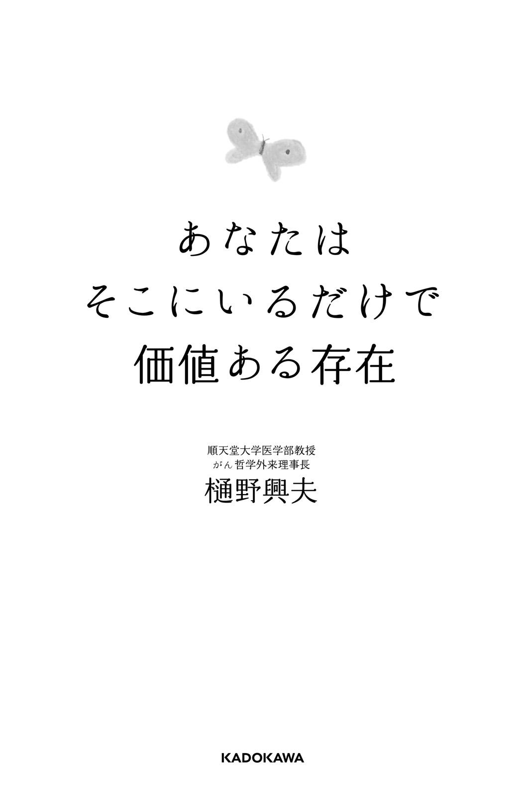
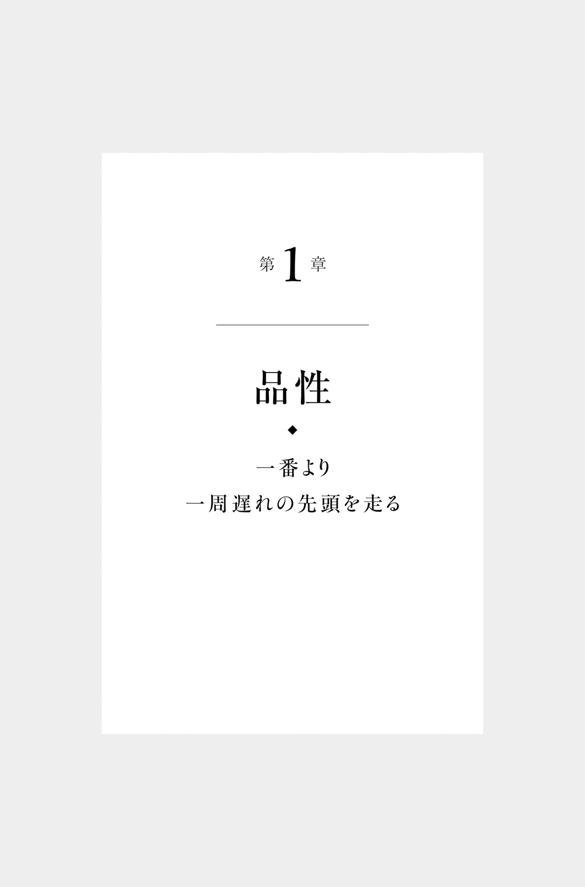
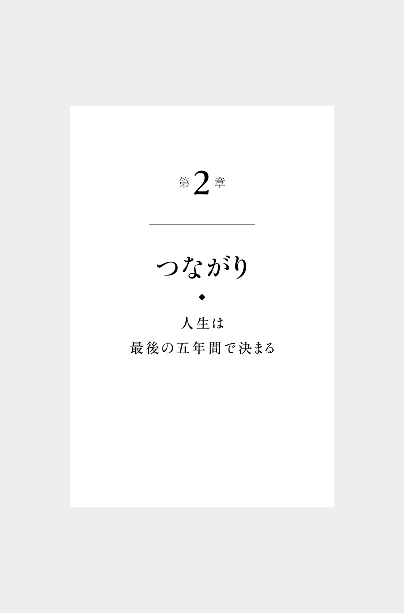
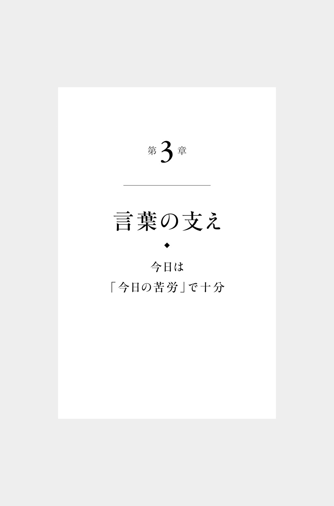
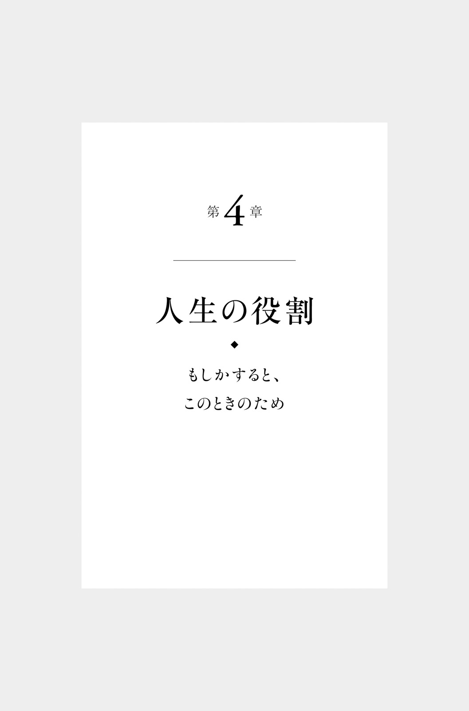

| あなたはそこにいるだけで価値ある存在 | |
| 樋野 興夫 | |
| (2016) | |
あなたはそこにいるだけで価値ある存在
樋野興夫
本作品の全部または一部を無断で複製、転載、配信、送信したり、ホームページ上に転載したりすることを禁止します。また、本作品の内容を無断で改変、改ざん等を行うことも禁止します。
本作品購入時にご承諾いただいた規約により、有償・無償にかかわらず本作品を第三者に譲渡することはできません。
本作品を示すサムネイルなどのイメージ画像は、再ダウンロード時に予告なく変更される場合があります。
本作品の内容は、底本発行時の取材・執筆内容に基づきます。
本作品は縦書きでレイアウトされています。
また、ご覧になるリーディングシステムにより、表示の差が認められることがあります。
本文中に「＊」が付されている箇所には注釈があります。その箇所を選択すると、該当する注釈が表示されます。

人生は「何をするか」よりも「どうあるか」が大事。
これは、私が敬愛してやまない新 渡 戸 稲 造 の言葉です。
私が発案した「がん哲学外来」では、「言葉」を処方します。その多くは、私自身が若い頃から学び、感銘を受け、心の引き出しにためてきたものです。
私が何を学んできて、どのようにしてがん哲学外来と結びついたのか、少しお話ししましょう。
まず学んだのは、戦後初の東大総長を務めた南 原 繁 の本でした。私が十九歳の浪人生のとき、東大で南原繁から直接教えを受けたという予備校の先生に勧められたことがきっかけです（※２０６～２０７ページ 〔＊〕 に本書に登場する主な人物紹介を掲載しています。くわしく知りたい方はご覧ください）。
南原繁の著作を読んでいると、新渡戸稲造に行き当たりました。
「何かをなす（to do）の前に、何かである（to be）ということをまず考えよ、ということが（新渡戸）先生の一番大事な教えであった」「明治、大正、昭和を通じて、これほど深い教養を持った先生はなかったと言ってよい」と南原繁は語っています。
そこまで称 えられるとは、どういう人物なのかと興味がわき、新渡戸稲造も読むようになりました。同様に、南原繁が影響を受けた内 村 鑑 三 や、新渡戸稲造と内村鑑三から強い影響を受けた矢 内 原 忠 雄 にも親しんでいきました。
やがて、医師になった私は「病理医」の道を選びました。病理医とは、患者から採取した細胞や組織の診断、亡くなった患者の病理解剖などを行う医師です。
順天堂大学医学部でがんの診断や研究を行っていた二〇〇五年八月、研究室にこもりきりだった私が、外来に出ることになった出来事がありました。その二カ月前、アスベストの健康被害が社会問題化した「クボタショック」が起こり、順天堂大学医学部附属順天堂医院に「アスベスト・中 皮 腫 外来」が開設されることになったのです。そこで、中皮腫の検査法を開発していた私に声がかかりました。
中皮腫は職業や環境の影響で発症します。進行が速く治療が難しいがんです。外来で中皮腫の患者さんと接するうちに、患者さんと忙しい医療者の間にはぽっかりと隙間が開いていることに気づきました。また、難しいがんにかかった人やがんの末期の人には、「通常の治療だけでは不十分。寄り添い、思いを聞き、癒す場が必要だ」と痛切に感じました。
私はがんの病理医になって間もない頃から、医学と南原繁の政治哲学を結びつけ、「がんを哲学する」ことをイメージしていました。「がん哲学外来」という発想は自然のなりゆきでした。こうして、二〇〇八年一月から三月までの期間限定で、順天堂医院に「がん哲学外来」が開かれ、患者さんたちと個人面談を行いました。その反響が大きかったため、病院から飛び出して行うようになったのです。
現在全国約八十カ所に「がん哲学外来」から発展した「がん哲学外来メディカルカフェ」が開設されています。がん患者さんやご家族、医療者、一般市民などが集う対話の場です。開かれる場所は、病院、公共施設、福祉施設、教会、寺院などさまざまです。
いずれも私が無理強いやお願いをしたわけではなく、趣旨に賛同し、必要性を感じた人たちが自発的に立ち上げてくれました。私は各地のカフェに講演に行き、希望者を対象にがん哲学外来（個人面談）を行います。
がん哲学外来では、相談に来られた方とお茶を飲みながら対話をします。入院中の患者さんのベッドサイドで行うこともあります。患者さんやご家族の悩みを「解決」することは難しいので、「解消」することを目指しています。薬局でもらうような薬の処方箋は出しません。代わりに「言葉の処方箋」を出します。料金は無料、副作用もありません。一組三十分から一時間とたっぷりの時間をかけます。
心掛けているのは、相談される方の心の奥底まで届き、尊厳に触れる言葉を選ぶことです。前述した南原、新渡戸、内村、矢内原、そして発がん研究の第一人者・吉 田 富 三 を加えた五人と、そのほかの尊敬する偉人たちの名言や、学びから想を得て私が創作したものです。
この本は、がん哲学外来の源流をたどりたいという声から生まれました。
がん患者さん以外の方にもお伝えしたい四十二の言葉を掲載しています。
その言葉はすべてあなたへの贈り物です。
まずはお茶を一杯。そして対話をしましょうか。
目次

あなたの「人生の目的」は何ですか。
こう聞かれてすぐ答えられる人は、どれくらいいるでしょうか。
「目標」なら簡単だと思います。「資格を取る」「起業する」「家を買う」など、次々と挙げられるでしょう。
一方、人生の目的とは「何のために生まれてきたのか」「なぜ生きるのか」と同じ意味です。人間にとって根源的なテーマです。
昔から、数々の宗教家や著名人もこのテーマに向き合ってきましたが、自分の答えは自分で見つけなければなりません。
物質的に恵まれているはずの日本で、年間約二万五千人もの自殺者が出るというのは、人生の目的を見つけられない人が多いことの表れともいえます。
がん哲学外来を訪れる患者さんにとって、「なぜ生きるのか」はより切実な問題です。
「こんなつらい治療に耐えてまで、生きる意味があるのでしょうか」
訊ねる患者さんに、私はしばしばこう答えます。
「人生の目的は品性の完成にあり」
この言葉は、新渡戸稲造と内村鑑三の言葉にちなんでいます。
新渡戸稲造は、その著書『武士道』に、「武士の教育で一番大切なことは、品性を建てることであった」と記しています。
内村鑑三は、ある温泉の若主人に贈った「成功の秘訣」十カ条の中で「人生の目的はお金もうけではない。品性を完成することである」と諭 しました。
品性とは、言い換えれば性格のことです。つまり「品性の完成」＝「性格の完成」です。性格の完成と聞けば、どうすればいいかわかる人も多いのではないでしょうか。
「その人らしさを発揮して、与えられた使命をやりとげる」ということです。
ある患者さんはお芝居が好きでした。残された短い時間の中でできることは何か。「自分らしいこと」「人のためになること」をしたいと考え、親しい役者さんたちと『葉っぱのフレディ』をモチーフにした朗読劇の上演を企画しました。『葉っぱのフレディ』は、木の葉の一生を通して命の循環について描いた絵本で、世界中で親しまれています。
残念ながら患者さんは公演を待たずに亡くなりましたが、作品は音楽劇へと発展し、患者さんが通っていたがん哲学外来メディカルカフェで上演されました。超満員の会場は感動に包まれ、私はお芝居を一緒に鑑賞したご家族に向かって、患者さんの品性を称 えました。
「自分らしく生き、人のためになることに力を尽くして、品性を完成させる」。まさにそういう生き方のお手本でした。
私たちの社会では、何でも一番になることがよしとされています。
学年で一番の成績をとる。
音楽コンクールで一位をとる。
売上高日本一の会社になる。
オリンピックで金メダルをとる。
頑張って一番になるのはいいことです。知力、体力、精神力などいろいろな力が養われることでしょう。達成感や自己肯定感も味わえるでしょう。
でも私はあえて「一番」より「一周遅れの先頭」を選びます。これは国立科学博物館長の林良博先生から以前聞いた言葉です。
「人生は一周遅れぐらいがちょうどいい」。そう思います。
それはなぜか。
私たちが目指す一番とは、相対的な評価です。
そのときに試験を受けた人の中での一番、そのときに参加した人の中での一位。そのときにあった会社の中での一番......。
ほかの人との比較で決まるもので、絶対的なものではありません。
また、こういうこともあります。
子どもの頃の運動会のリレーを思い出してみてください。
選手たちがトラックを走っています。
何周目かになると、一周遅れのクラスが出てきます。でも、途中から見た人には誰が一番かわかりません。遅れている子がトップで、その後ろを実際のトップの子が追いかけているように見えるときもありますよね。
さすがに最終ランナーの番になると、一周遅れの子がはっきりします。最後はほかの子はみんなゴールして、走っているのはその子だけになります。
みなさんはそのとき、その子を責めたり、見下したりしたでしょうか。
「頑張れ、頑張れ」と声援を送り、ゴールすれば拍手で称えませんでしたか。
人生も同じだと思います。
無理をして一番になろうとしなくてもいい。
一周遅れには一周遅れのよさがあります。
そして一周遅れの責任もあります。
必死で一番を走っていると、周りの景色が見えません。一周遅れは周りの景色を見ながら走れます。心にゆとりができ、品性が生じます。
品性は人に感動を与えます。この品性こそ、「一周遅れの先頭の責務」です。
自分の価値は、すでにすべての人にあります。
人との競争で決まるものではありません。
私は一周遅れで走り、鼻歌を歌いながらゴールします。
「苦難にあっている患者さんの話ばかり聞かれていて、つらくなりませんか」
ときどき、こんな心配をしてくださる方がいらっしゃいます。
たしかにがん哲学外来に来られる方々は、重い悩みを抱えています。
「家族や友人には話せないから」
「一人で抱えているのが苦しくなって」
そういう方が多いです。
私は言葉の処方箋を贈りますが、一方的に「救ってさしあげる」という気持ちはありません。むしろみなさんから学ばせていただくことばかりです。
あるとき、がんがきっかけで引きこもるようになったという方が来られました。
「仕事を退職してからボランティア活動や趣味のサークルなどで、充実した生活を送っていました。でも昨年がんになり、すべてのおつき合いをやめてしまいました。ときどきお誘いのメールをいただきますが、とても出る気になりません」
がん哲学外来へも、ご家族に勧められて何カ月も迷って、やっとの思いで来てくださったそうです。
「苦しみがあるから品性を磨けます。そしてその品性が希望を生みます。今の苦しみに耐えれば、希望の光が見えてきますよ」
私が話すと、涙ぐみながらうなずいていらっしゃいました。
その方は今、私が主宰するがん哲学外来メディカルカフェのスタッフになっています。最初の面談のときとは見違えるような、生き生きとした表情で活動されています。
困難は誰の上にもふりかかります。
「困難から目をそむけたい、逃げたい」
みなそう思うでしょう。でもふりかかってしまった以上逃れることはできません。ほかの人に代わってもらうこともできません。
自分の困難は自分で引き受けるしかないのです。
スタッフになった患者さんは、逃げることをやめ正面から困難と向き合いました。苦しみに耐え、がんになったからこそできる自分の役割を見つけました。
がん哲学外来にはこの方のように、苦難を乗り越え、家族のため、誰かのために立ち上がる方がたくさんいらっしゃいます。
そのような方たちに接すると、私も襟 を正す思いです。
私の言葉は聖書から引用したものですが、古今東西の著名人たちも同様の名言を残しています。
忍耐と正しき良心とをもってすべての災禍困難に抗 し、かつこれに耐えよ。（新渡戸稲造『武士道』）
世界は苦難に満ちているが、それを乗り越えた事例にも満ちている。（ヘレン・ケラー）
いままでの僕の記録はみんな、耐えることで作られてきたんです。（王貞治）
いつの時代も誰にでも困難はありますが、乗り越える道もそれぞれにあることがわかりますね。
困難を乗り越えることで品性が磨かれ、その先には希望がある。みなさんもぜひ覚えておいていただきたいと思います。
がんなどの大病をすると、多くの人が自分の価値が低くなったと感じます。
「健康なときはあんなに働けたのに」
「家族に申し訳ない」
「自分は役に立たない人間だ」
思い悩み、生きる目的も見失います。
「人生は与えられた贈り物です。その価値を高めて、次の世代に『勇ましい高尚なる生涯』を遺していくことは誰にでもできますよ」
私が答えると、みなさん不思議そうな顔をされます。
「勇ましくて高尚な生涯？」「なんだか偉そう」「すごく難しそう」
そんな表情が浮かんでいます。
「勇ましい高尚なる生涯」は、私が尊敬する内村鑑三が明治二七年に講演会で話した言葉です。内村鑑三は生きている間に少しでもよりよい世の中にして、次の世代に遺したいと願いました。そして誰にでも遺せるのは「勇ましい高尚なる生涯」だと述べました。
「難しそう」と思う人は、人生そのものが贈り物と考えるとわかりやすいと思います。人生（命）は、自分の所有物ではありません。与えられた贈り物です。それを自分が生きている間によりよいものにして次の世代に贈り、去っていくのです。
特別なことをする必要はありません。日々思いやりや向上心を持って、誠実に生きることが大切です。その積み重ねが勇ましい高尚なる生涯につながる、と内村鑑三は伝えています。大病をされている方でもできます。
ある日、「がんは治療しない方がいいという説」を信じて、治療をやめようとしている人が相談に来られました。
「あなたが全力を尽くして治療に向かう姿は、ご家族への贈り物になりますよ」
私がそう伝えるとハッとした顔になり、
「がんになってから家族に迷惑をかけてばかりです。そんな私でも家族のためにできることがあるのですね」と、晴れ晴れとして帰られました。
その数年後、その方の奥様が訪ねて来られました。ご本人は亡くなりましたが、相談に来られた後治療を受けて病状が安定し、家族で充実した時間が過ごせたそうです。
「子どもたちは、父親を誇りに思っています」
奥様の言葉が印象的でした。
あのとき治療をあきらめていたら、患者さんはずっと「自分には何もできない」と負い目を持ち続けていたでしょう。お子さんたちからも尊敬されなかったかもしれません。
与えられた人生を放棄せず、最 期 まで責任を持って全 うする生き方も「勇ましい高尚なる生涯」なのです。
「俺の名はNitobe, Not to do, but to be.」
新渡戸稲造の自己紹介文です。
第一高等学校の校長だったとき、学生が並ぶ講堂の黒板にこう大書しました。ユーモアにあふれ、人を喜ばせることが好きだったという新渡戸稲造らしいエピソードです。
みなさんは「to do（何をするか）」と「to be（どうあるか）」どちらが大事か、考えたことはあるでしょうか。
私たちの社会では、「to do」が重視されています。大きなことを成しとげた人が高く評価されます。
「一花咲かせる」「立身出世する」「功成り名遂げる」
「仕事で成功して、偉くなって、有名になって、お金持ちになって......」
多くの人が描く理想の人生像でしょう。
しかし「to do」の世界には、プレッシャーもついてまわります。
「売上ノルマを達成しなければならない」
「競合に負けない製品を開発しなければならない」
「タイトな納期に間に合わせなければならない」
常に「ねばならない」との戦いです。「to do」の世界で評価されるのは結果です。人格やプロセスなどは考慮されません。
そこには比較・競争があります。「人を蹴落としてでも成功したい」「自分さえよければ」という意識が生まれます。
立派な業績を挙げることも、何かを成しとげるのも素晴らしいと思います。
でも果たしてそれができる人はどれくらいいるでしょう。
できる人はほんの一部で、多くの人は過労で疲れ切っていたり、挫折感を味わっていたりするのではないでしょうか。
新渡戸稲造は、「to do」以前の問題として「to be」がある。人間としてどうあるべきかが問われなければならない、と述べました。
「to be」は人格や品性です。それが定まっていれば、おのずと「何をするか」という「to do」も決まってきます。
「to be」という人格や品性を前提とした「to do」とは、自分のあるべき姿に向かって起こす行動のこと。そう考えれば人と比較をすることも、周りの評価を気にすることもなくなります。
あなたは、そこにいるだけで価値ある存在です。
自分らしい価値を高めるためには、「何をするか」よりまず「どうあるか」を考えるようにしてください。目指すべきは「何かを成しとげること」より「自分のあるべき姿」。
そう思えるようになれば、ずっと生きやすくなるはずです。
「ハッピー」の意味は「幸せ」。
英語を習っていない子どもでも知っている単語だと思います。みなさんもハッピーになりたいと思いますよね。
でもその幸せは本当の「喜び」といえるでしょうか。
病気、事故、災害など、何かしら不運に見舞われたとします。すると誰しも自分は不幸だと感じます。
「病気にならなければハッピーだったのに」
「賠償金がもっと多ければ、少しは報 われるのに」
などと思うことでしょう。つまり、私たちが求めるハッピーは条件つきです。
「志望校に受かったらハッピーになれる」
「家族とうまくいっていない私はハッピーじゃない」
欲求が満たされればハッピー、満たされなければアンハッピー、という図式です。
私は人生の真の喜びは、「ハピネス（happiness）」ではなく「ジョイフル（joyful）」だと思います。
ハピネスもジョイフルも辞書を引くと「幸福」「喜び」「楽しい」など似たような意味ですが、私が思うハピネスは「表面的な幸せ」、ジョイフルは「心からの喜び」という違いがあります。
表面的な幸せを求めるから、かなえられないと失望に終わるのです。
東日本大震災の後、避難所生活を経験した暴走族が改心して解散したというニュースがありました。避難所で大人たちが温かく接してくれたことで、自分たちも復興に力を尽くそうと思うようになったそうです。
避難所の大人たち自身も被災者でした。それにもかかわらずほかの人を助けようとする行動の土台に、きっと「ジョイフル」の精神があったのでしょう。
ジョイフルは、「そこに在る」という喜びです。
存在そのものに価値があり、幸せがある。そしてどんな状況でも人のためを思い、行動する。その思いがジョイフルです。
ジョイフルの精神は、元気な人だけのものではありません。病気で思うように動けない人でも持つことができます。
ある寝たきりの患者さんがそうでした。自分がつらいときでも、いつも周りの人への配慮を忘れませんでした。
病院のスタッフに笑顔で「ありがとう」。
家族や友人が見舞いに来ると「寒かったでしょう。よく来てくれたね」。
その患者さんと接した人は、みんな笑顔になりました。ほかの部屋の患者さんも、よく訪れていました。
ジョイフルには自分はもちろんのこと、周りの人をも変える力、幸せにする力があります。
「真の喜びはハピネスではなくジョイフル」。
「自分はハッピーじゃない」と感じるとき、思い出していただきたい言葉です。
「がんの顔つき」という言葉をご存じでしょうか。
病理医は顕微鏡でがん細胞を見て、悪性度を判断します。このとき、悪性度が高ければ「顔つきが悪い」、低ければ「顔つきがいい」と表現することがあります。
身近なたとえでいうと、顔つきが悪い細胞は更生が難しい悪人で、顔つきがいい細胞は更生しやすい不良というところでしょうか。
そのためか、がん哲学外来でも私は、人の風貌を通して心を診 ます。
今日も患者さんがドアをノックします。
深刻な顔、厳しい顔、疲れた顔、不満げな顔、失望した顔。
入ってこられる方たちの顔です。
私はよく患者さんに「風貌は一夜にして変えられますよ」とお話しします。
「顔立ち」は親から受け継いだものなので変えられませんが、風貌＝「顔つき」は自分の心の持ち方によって変えられます。
「女は、自分の水がめを置いて町へ行き、人々に言った。『来て、見てください。私のしたこと全部を私に言った人がいるのです。この方がキリストなのでしょうか。』」
これは、聖書のサマリア人女性のエピソードです。当時サマリア人は差別されていました。しかも女性はやましいことをしていたため、人目をしのんで井戸に水を汲みに行きます。そこで神に出会います。女性は、引け目を持つ自分に神が分け隔てなく接してくれたことに感動し、「私は神に会ったのよ！」と、街の大勢の人の前で自慢しました。まさに風貌が変わるほどの出会いだったのです。
私も、がん哲学外来が、訪ねてくる方にとってこの女性のような出会いの場になることを願っています。
たしかに、多くの方が帰るときには明るく晴れやかな表情になります。できればその表情をずっと続けていただきたいと思うのです。
いつも難しい顔をしていると、難しい顔つきになってしまいます。健康でもいつも不機嫌そうな顔をしている人がいますよね。そういう人には、誰しもあまり近づきたくないと思います。
どんなときでも優しい表情の人、笑顔の人に人は引き寄せられます。
まずは、人前で怒った顔や疲れきった顔をしないよう心掛ける。
次に口角を上げて、形から笑顔を作ってみる。
心の中は嵐でも、自分に「笑顔、笑顔」と言い聞かせる。
自分がどんな顔をしているかわからないときは、話している相手の顔を見てみてください。あなたが笑顔なら、相手も笑顔か穏やかな表情のはずです。
続けているうちに、それが「自分の顔つき」になっていきます。
鏡でご自身の顔をご覧になってみてください。
どんな顔をしていますか。
風貌は一夜にして変えることができますよ。
「余命六カ月と言われてから二年になりますが、私は元気に生きています。どういうことでしょうか」
がん哲学外来には、こういう方がよくいらっしゃいます。
一昔前までは、患者さんにがんを告知すべきかどうか、医師と家族が悩んだものでした。今は告知は当たり前。余命さえ告げられます。
がんが再発や転移をして、治療法もあまりないというとき、「ではあとどれくらい生きられるのか」気になる気持ちはよくわかります。でも私は、余命宣告はあまり意味がないと思っています。
「余命三カ月です」と医師に告げられたとします。
すると誰でも「自分は、あと三カ月しか生きられない」と思うのではないでしょうか。
それは大きな誤解です。
この余命の根拠をご存じですか。医師が告げる余命とは「生存期間中央値」のことです。たとえば患者さん百人のデータがあったとしたら、その半分の五十人の患者さんが亡くなるまでの期間です。
もっと短い人もいれば長い人もいます。医師が言うのは単なる「データ」です。決して「あなたの」生存期間を言っているわけではありません。
人間が一人ひとり違うように、がんの性質もそれぞれ異なります。がんの部位、病期が同じで、同じ薬を使っていても、効き目には個人差があります。
みなさんがかかっている医師だけでなく、どんな名医でも「あなたの」余命を言い当てることなんてできないのです。
どういう方の余命であっても、わかる人は一人もいません。たとえわかったとしても、自分で変えることはできません。わからないこと、変えられないことで悩むのは無意味です。
人は健康なときは余命など気にしません。それでも急病や事故などで、突然亡くなることがあります。
健康な人でもがんの人でも、いのちの期限は決まっていません。
「生きている限り、いのちは続く」。ただそれだけです。
わからないことに悩むより、確実にいのちがある今を見つめましょう。
目の前の一日一日を大切に生きてください。
やるべきことをしっかり果たし、今を輝かせてください。

困難にあってくじけそうなとき、新しいことにチャレンジするとき、あなたには心の支えになる人はいますか。
私の心の支えになっているのは、子どもの頃郷里の人たちに見守られて育った経験です。
私は島根半島の西端にたたずむ、小さな港町で生まれ育ちました。かつては北 前 船 の寄港地として、また鉱山で栄えた時代もありましたが、私が子どもの頃には静かなさびしい町となっていました。
当時のことでよく思い出すのは、夏の夕方の風景です。
お盆中は都会に出た人たちが帰省してきて村も賑 やかになりますが、彼らが帰るといつものものさびしい風景に戻ります。そんな中で、地元の子どもたちは薄暗くなるまで港で遊んだものでした。
皆で遊んだあと私は、一人で海を眺め物思いにふけっていることもありました。そういう私を、地元のお年寄りたちはそっと見守ってくれました。
声をかけるでもなく、少し離れたところで夕涼みをしながら見守ってくれる。言葉を交わさなくても存在は感じられます。それだけで、大きな安心感が得られました。
私は、そのときのお年寄りのように「三十メートル後ろからそっと見守る」気持ちで、がん哲学外来を始めました。
三十メートルは、声は聞こえないけれど、姿は見えて様子はうかがえる。何かあればすぐ駆けつけられる距離です。
すぐ隣にいて、「いつでも支えてあげる」と言われると、人は疲れてしまいます。いてもらって申し訳ないという気持ちになり、支えてほしくても遠慮してしまうこともあるでしょう。それに、そっと一人にしておいてほしいときもありますよね。
一人で心細くなり振り向いたら、三十メートル後ろに見守ってくれている人がいる。そのくらいの距離感がちょうどいいと思います。
人は一人では生きられません。見守ってくれる人が全く思い浮かばないという人でも、誰かしらとはつながっています。
その中にあなたのことを気にかけてくれている人は必ずいます。親、きょうだい、親族、友人、知人。あるいは、行きつけのコンビニの店員さん、カフェの店長さん、いつも乗るバスの運転手さんかもしれません。
新渡戸稲造も著書の中で「自分に対して厚意を持ち、我が身を守って身の安全を祈ってくれる者は、自分ではその居場所も名前もわからないが、必ず広い世界の中にいるものである」と書いています。
心の支えがほしいときは、三十メートル後ろや世界のどこかであなたを見守っている人がいることを思い出してください。
そしてご自身も、誰かを見守る存在であってほしいと思います。
中学一年生の数学の問題です。
マイナスの数とマイナスの数を掛け算するとどうなるでしょうか。
みなさんご存じの通り、プラスの数になります。私は人間関係でも同じことが起こると感じています。
がんになり相談に来られる方は、マイナスの感情を持っています。私はその方たちに、「マイナス掛けるマイナスはプラスです。自分より困っている人を探しに行ってください」とお伝えします。
マイナスの感情の人が元気になりたいと思い、健康で明るいプラスの感情を持つ人とつき合ったとします。するとマイナスの人は、「どうしてこんなに明るく元気にしていられるのだろう。明るくなれない自分はダメ人間ではないか」などと思ってしまいます。
プラスの人はマイナスの人に合わせようとして、気持ちがだんだんマイナスになっていきます。マイナス×プラス＝マイナスになってしまうというわけです。
がん哲学外来メディカルカフェには、マイナスの人たちが集まります。スタッフもがん患者と接し、痛みを知る人という意味ではマイナスの人です。マイナスの人同士で話をすると、痛みに共感し合い、互いに相手を思いやるというプラスの感情が生まれてきます。
「いつもプラスの人たちに囲まれていてつらい」と思っている人も、マイナスの人との対話を通してプラスになれると、家に帰ってプラスの人と一緒にいるのが楽になります。
このマイナス×マイナス＝プラスの法則は、がん以外のつらさや痛みを抱えている人にも有効です。
メディカルカフェに、親御さんと一緒に不登校のお子さんが来られたことがありました。普段は引きこもっているけれど、がん哲学外来なら行ってもいいと言ったそうです。変わった名前なので、「どんなところか見てみよう」と思ったのかもしれません。
メディカルカフェでは、参加者同士がいくつかのテーブルに分かれ対話をします。話したくない人は聞いているだけでも構いません。そのお子さんも自分からはほとんど話しませんでした。ほかの人たちの話にじっと耳を傾け、カフェが終わるときに言いました。
「つらいのは自分だけじゃない、ってわかりました。また来ます」
そして、来たときより明るい表情で帰っていきました。
マイナスの人は、自分のことばかりに目が向きがちです。そういうときにほかのマイナスの人の話を聞くと、自分以外の人のことを考えるゆとりが出てきます。そして自分のことも、一歩引いた視点から見られるようになります。
マイナスの人は、ぜひマイナスの人に接する機会を探しに行っていただきたいと思います。
「歯を食いしばって......」と聞いて、みなさんはどんな言葉を連想しますか。
「歯を食いしばって頑張る」「歯を食いしばってこらえる」などを思い浮かべる人が多いと思います。
私は「歯を食いしばって人を褒める」というポリシーを持っています。
「歯を食いしばる」というネガティブな言葉と、「褒める」というポジティブな言葉の組み合わせ。「何だろう」と思われるかもしれません。
人は人を評価するとき、「褒める」だけで終わらせることができません。それは、尊敬する人についてであってもです。
私は大学で学生の面接をすることがあります。そのときによく、尊敬する人について話してもらいます。彼らが尊敬する人は、親、先輩、恩師などさまざまですが、ほとんどの人が褒め切ることができません。
「○○先輩は責任感が強く、面倒見がいい人です。とても尊敬しています。しかし......」とマイナス面もあげつらいます。
それでは、その人のことを心から認めたことにはなりません。
もし、自分自身のことを「でも」「しかし」と言われたら？ と考えてみてください。自分が否定されたと感じるはずです。
「でも」や「しかし」の裏側には、嫉 妬 や自分が優位に立ちたいという気持ちがあります。「観察力がある」「鋭い」などと思われたいという欲求も潜んでいます。
人を本当に認めるためには、自分を犠牲にすることも必要です。
私は「三分間褒め続けなさい」とよく話します。「たった三分でいいのか」と思うかもしれませんが、三分間褒め続けるのは大変です。
一分も経たないうちに「でも」「しかし」と口から出そうになるでしょう。「自分は褒め続けられる」という人でも、二分三十秒しか持ちませんでした。
そこを歯を食いしばってこらえ、褒め続けるのです。
そうすると何が変わるでしょうか。まず風貌が変わります。心の中に嫉妬心があると、いくら紳士面をしていても顔に表れています。三分間褒め続けられるようになると、相手を祝福する気持ちが表れるようになります。相手との関係もよくなっていきます。
昔インドで、マザー・テレサに砂糖を届けた四歳の男の子がいました。その子は、「マザー・テレサや貧しい人のために」と、三日間砂糖を食べるのを我慢して届けたのです。
その子のように、三日間犠牲にしなさいとは言いません。まずは三分間の犠牲に努めてください。
人を評価するときは、歯を食いしばって三分間褒め続ける。非難はしない。
そうすると次第に風貌が変わり、自分も褒め続けてもらえるような人間になれるのです。
ここで必要なのは、生きる意味についての問いを百八十度方向転換することだ。わたしたちが生きることからなにを期待するかではなく、むしろひたすら、生きることがわたしたちからなにを期待しているかが問題なのだ、ということを学び、絶望している人間に伝えねばならない。（ヴィクトール・Ｅ・フランクル 〔＊３〕 『夜と霧』）
「人生に期待」。
「人生から期待」。
「に」と「から」の違い、わかりますか。
近頃は、数カ月程度で職を転々とする若者が多いと聞きました。
「もっとやりがいのある仕事をしたかったので」
「人間関係がうまくいかなくて」
「なんとなく合わなくて」
転職の理由です。その裏には、人生への期待が潜んでいます。
「やりがいのある仕事はほかにあるに違いない」
「人間関係がうまくいかないのは、上司や同僚に問題があるから」
「合わないのは会社のレベルが低いから」
人生に期待して受け身でいるから、転職の理由はすべて会社のせい、人のせいにしてしまいます。これではどこに行っても同じです。
仕事も人間関係も百パーセント満足できる職場なんてありません。不平不満はなくなりません。
人生に期待するのではなく、人生から期待されていると考えてください。
人は誰でも役割を持って生まれています。それに気づき、果たすことを人生から期待されています。
どうすればいいかわからなければ、まずは置かれた境遇を受け入れてみる。
採用してくれたこと、仕事があることに感謝し、ベストを尽くす。
何か成果を出すまで続けてみる。
そうすると、最初は向かないと思っていた仕事にやりがいを見 出 せるかもしれません。一緒に仕事を成しとげたことで、ぎくしゃくしていた職場の人間関係がよくなるかもしれません。
アメリカの神学者ラインホルド・ニーバー 〔＊４〕 が書いた「神が置いてくださったところで咲きなさい」という詩があります。
置かれた場所で「仕方ない」と思うのではなく、幸せに生き、周りの人も幸せにしなさい、という詩です。
ブラック企業や劣悪な環境でも甘んじるようにとは言いません。体を壊すほど無理することもないでしょう。
ただ、置かれたところで咲き、人生の期待にこたえる努力もしてほしいと思います。
草木の種は植えられたところや落ちたところで芽を出し、花をつけます。不平不満を言わず黙って美しく咲き、見る人を幸せにします。
この言葉は、新渡戸稲造の人物像から学んだ、私のスタンスです。
「脇が甘い」は、みなさんご存じのように、守りが弱いということです。相撲でしたら相手にまわしを取られてしまいます。
ちょっと頼りないイメージですよね。どうしてそれでいいのか、と思われることでしょう。
日本はここ数年でクレーム社会になりました。そのためか、どこを見ても脇を固めてガードばかりしているように思えます。
たとえば買ったばかりの家電製品が壊れ、メーカーのサポートセンターに電話をすると、通話を録音するというメッセージが流れます。「応対品質向上のため」という理由ですが、クレーム対応のための証拠物件として、ともいわれます。
医療者もリスク回避のため、脇をしめています。あなたが病院の外来を受診したときの医師を思い出してみてください。忙しそうで、余計なことは言わない。質問するすきもない。そんな医師が多いのではないでしょうか。
でもそれでは、患者さんは心を開けません。
重い悩みを抱えている患者さんにとっては、相手が医師であっても気持ちを吐き出すのは勇気がいります。
私はがん哲学外来で、「ここをどのようにして知りましたか」「道に迷いませんでしたか」など、「余計な話」をよくします。
なかなか言葉が出てこなければ、沈黙でもいいのです。沈黙も対話のうち。お茶を飲みながらゆっくり待ちます。まったくもって脇が甘く、すきだらけです。
そのすきがあるからこそ患者さんは安心して心を開き、悩みを話してくださいます。
話を聞き終えると、言葉の処方箋を出します。その言葉が患者さんの尊厳に触れると、感動していただけます。
感動すると患者さんは変わります。笑顔になることもあるし、涙を流されることもあります。いらしたときは悩みに押しつぶされそうだったのが、帰るときはみなさん明るい表情です。
その変化はご本人だけに留まりません。悩みにとらわれているうちは自分のことしか考えられませんが、悩みが解消すると周りを見る余裕が出てきます。
経験を持ち帰り「同じように苦しんでいる人に寄り添いたい」と、地域活動に携わる方もいらっしゃいます。その方に関わった方からまたほかの方へと、バトンがつながっていきます。
「妻がとても感動したと話していました」
「友人によかったからと勧められたので来ました」
各地で講演会を行うと、そういう方がよくいらっしゃいます。
「脇を甘くしてつけ入るすきを与え、懐を深くして感動を与える」。
みんなが実践できて好循環を生み出せれば、温かいよりよい社会になるのではないでしょうか。
ここに円形と楕円形、二つの形があります。どちらの形がバランスがいいと思いますか？
「もちろん円形でしょう」
みなさんそうおっしゃると思います。
広辞苑で「円」の項を見ると、「完全で欠けたところがないこと」と書いてあります。「円満」「大団円」という言葉もあるように、理想的な形に思えます。
しかし内村鑑三は「真理は円形にあらず、楕円形である」と主張しました。
どうしてでしょう。
円は中心点が一つです。人間社会に置きかえると、一人のリーダーの周りに似た考えの人たちが集まっているグループです。
そのようなグループは、自分たちとは異質なものを排除し、派閥を作りたがります。内部の意見が一致しているうちはいいですが、ひとたび食い違いが生じると崩壊してしまいます。
一方、楕円形には焦点が二つあります。人間は均一ではありません。社会でも楕円形のように異なる意見のリーダーが二人いた方が、バランスが取れます。会社もワンマンの社長とイエスマンだけのところより、多様な人材がいた方が発展するのはいうまでもありません。
内村鑑三は「万物に二方面があり、一はほかのものとは素質が全く違う」と続けています。
これは人間の体にもあてはまります。円形と楕円形を人間の体で考えてみましょう。
円形は、均一な細胞が異常増殖するがん細胞を思わせます。
元々生体では、対極をなすものがうまく働いて健康を維持しています。自律神経には、活動しているときに働く交感神経と、リラックスしているときに働く副交感神経があることは、ご存じでしょう。この二つの神経がシーソーのように働くことで、健康的な生活が送れます。
また細胞内には、がんの増殖を促すがん遺伝子がありますが、ブレーキの役目を持つがん抑制遺伝子もあるので、正常に機能していればがんの増殖を抑えられます。
二つの性質を持った楕円形は、生体システムから見ても理にかなっているのです。
「頑張って難関大学に入ったけれど、すぐやめてしまった」
「人気企業に就職できたのに、三カ月で退職してしまった」
最近、こういう話をよく耳にします。
「いい大学、いい企業に入ることが一番幸せ」
「自分は強くなければならない」
など、一つの価値観を中心に置いた円形思考にとらわれているからだと思います。
そのような人は、現実が円形からはみ出してしまうと、途端にもろくなります。内村鑑三も「人は何事でも円満を要求するが、まちがいの始めである」ということを述べています。
「強くなければならない」といった円形思考をやめ、「自分の中には強さも弱さもある」という楕円思考に切り替えてみてはいかがでしょう。
相反するものが自分の中にあることを認められれば、他者にも優しくなれます。楕円形の精神で生きましょう。
私の本業は大学教授です。
常に、アインシュタインの名言「教育とは、学校で習ったすべてのことを忘れてしまった後に、自分の中に残るものをいう」を心の片隅に置き、学生と向き合っています。
大学生だけでなく、ときには小学生、中学生、高校生の前でお話しさせていただくこともあります。
「がんの話は子どもには難しいのではないか」と思われるかもしれません。でも、とくに話し方を変えたり子ども向けの資料を作ったりはしません。五歳の子にも九十歳の人にも、同じ話し方、同じ資料です。
それはなぜか。
本物を見きわめる目は子どもの方が鋭い。子どもには「子どもだからこのくらいでいいだろう」などと、見くびった気持ちで作られた「子どもだまし」は通用しないと思うからです。
実際、学校で講演をすると、一番熱心に聴いてくれるのは小学生です。学び始めたばかりの小学生は、脳みそがフレッシュで知識欲が旺盛です。みんな目をキラキラさせて聞き入り、大人顔負けの質問もしてきます。
次に熱心なのが中学生、その次が高校生で、残念ながら一番学ぶべき大学生が最下位です。学ぶ意欲は年齢では測れないことがよくわかります。
いつまでも主体的に学ぶ姿勢を持ち続けたいものですね。
先日は、うれしいことがありました。
中学生が私を講演に呼んでくれたのです。以前お母さんと一緒にどこかで講演を聴き、企画を思い立ったそうです。
教育委員会でも学校でもＰＴＡでもない。
一人の中学生が先頭に立って旗を振る。実に頼もしいことです。
講演の後、中学生、高校生、大人が入り混じった対話の場に、私も参加させていただきました。人生について、死について、真剣に語り合う中高生。その熱意に接し、私も思いを新たにしました。
①気取りを捨てる
②壁をつくらない
③よく思われようとしない
④追従を慎む
⑤謙遜のしすぎは無礼
⑥立場に応じて言葉遣いを変える
⑦相手から何かを得るよう心がける
この「よく聞き、よく話すための七要件」は、そのとき彼らに贈りました。
これからも主体的に学び続けてくれることを、そして、学校で習ったすべてのことを忘れてしまった後に、彼らの中に残ることを願って。
学生だけでなく、大人も人と接する際に心掛けたい「七要件」です。
「街に出ましょう。本当にいいものは、街の中、ゴミの中にあります」
よくお話しさせていただく言葉です。
街の中は学びに満ちています。
あるとき、通勤途中にこんな光景を目にしました。
電車内で参考書を読んでいた高校生が居眠りを始めました。電車が揺れるたびに、隣の人に寄りかかっていきます。
「重いでしょう。起こして注意したら？」
寄りかかられた人の同行者がアドバイスします。
「いいの。寝かせてあげましょう」
しばらくして、高校生が目を覚ましました。
「寄りかかってすみません」
「大丈夫よ。疲れているのでしょう。でも寝過ごさないよう気をつけてね」
寄りかかられた人は、にっこりして答えました。
「ありがとうございます」
高校生は一瞬驚いた顔をして、恥ずかしそうにつぶやきました。
もしあなたが、寄りかかられたらどうしますか。
「重いんだよ。起きろよ」などと思いながら押し返したり、何とか相手に気づかせようとしたりするのではないでしょうか。
おそらくあのとき、近くにいた人たちもみんな「迷惑行為だ」と思っていたでしょう。「自分はあのようにはなりたくない」あるいは「寄りかかられたくない」と。
「人に迷惑をかけてはいけない」。たしかに正論です。
でも、寄りかかられた人が高校生に注意していたとしたら、感謝の気持ちは生まれませんでした。「なんだよ、疲れているんだよ」と逆ギレされ、お互い嫌な気分で電車を降りていたかもしれませんよね。
そもそも、正論って何でしょう。
お母さんが子どもに「ゲームばかりしていないで、勉強しなさい」。
妻が夫に「毎日遅くまで飲んでばかり。どういうつもり」。
昔も今も変わらない、家庭の「正論」です。
正論は強いです。威圧的で攻撃的です。
具合が悪くて食欲がない人に「食べて体力つけなきゃ」。
落ち込んでいる人に「元気出して。前向きになろうよ」。
困っている人や弱っている人にとって、正論はかなりのプレッシャーです。
インターネットを見ても、見ず知らずの多数の人が、見ず知らずの誰かを正論で攻撃しています。
そんな現象を見るたび思います。
「必要なのは正論より配慮」ではないかと。
誰かを非難しそうになったら思い出してください。
正論は人の数だけあります。
あなたの正論は、相手の正論ではないかもしれないのです。
みなさんは暇 であることをどう思われますか。
忙しい方が充実していると感じませんか。暇があったら、埋めなければならないと思うのではないでしょうか。
私は暇を「ひのあいだ、『日間』」と書きます。
暇があるのは喜ばしいことです。忙しくて暇がないと、心に太陽の光が射し込みません。金属のように光を反射するだけになってしまいます。
暇があれば「日間」ができる。すると、光が心の深くまで射し込みます。
私はよく「人には使命がある。自分の使命を見つけなさい」とお話しさせていただきますが、暇がなく光が反射している状態では使命は見つけられません。
では、日間を作るにはどうすればいいでしょう。
あなたがやっていることを思い返してみてください。仕事でもプライベートでも、「あれも、これも」とたくさん抱えすぎていませんか。
一人で何もかもやらないと気が済まない人、お願いされると断れない性格の人。日本には多いですよね。
「今抱えていることは、自分にしかできないことなのか。自分がやるべきことなのか」と考えるとどうでしょう。
たとえば今日の午後に予定している仕事は、同僚や部下でも対応できることではありませんか？
プライベートでは、一年やればよかったはずのＰＴＡの役員を、何年も続けて引き受けていませんか？
人生で本当に大切なものは少ないのです。
聖書にも「どうしても必要なことはわずかです。いや、一つだけです」という言葉があります。「余計なことにわずらわされないで、物事の核心をとらえましょう」という教えです。
「あれも、これも」と抱えていたものを取り出して、取捨選択をする。いわゆる棚卸しをしましょう。
抱えていたものに優先順位をつけると心に日間ができて、光が射し込んできます。
その光に照らされて、あなたにとって「これしかない」といえるものが浮かび上がってきます。
「これしかない」というのは自分のオリジナリティです。ほかの人には代われない、その人にしかできないものです。
「あれも、これも」より「これしかない」で生きる。
「これしかない」に「潔く専念する」。
そうすれば、必ず自分の使命が見つかります。
内村鑑三の生涯を見て感じたことがあります。
それは、「人生は最後の五年間で決まる」ということです。
内村鑑三の若い頃は、勤務先を次々と変え不敬事件を起こすなど、波乱に満ちていましたが、晩年は雑誌『聖書之研究』の発行と聖書講義を中心とした穏やかなものでした。多くのがん患者さんを見ても、同じことを感じます。
若いときに華やいだ生活を送っていた患者さんがいました。自分で起こした事業が成功して、毎日忙しく飛び回っていました。富や名声に引かれて、周りには人もたくさん集まってきました。
ところがある年、人間ドックでがんが見つかりました。最新、最高の治療を求めてドクターショッピングを重ね、高額な先進医療も受けましたが、経過はあまり芳 しくありません。患者さんは自暴自棄になり、事業もうまくいかなくなってしまいました。私がお会いしたのは、周りにいた人たちも去り、さびしい暮らしをされていた頃でした。
「仕事がうまくいき、健康だった頃はあんなにちやほやされたのに。今は、仲間も家族も去ってしまいました。どうしてこんな目にあうのでしょうか」
嘆く患者さんに、私は答えました。
「あなたも周りの人たちも『看板かじり』だったからです」
私は、会社の看板に頼って生きていて、会社から離れると何もできない人を「看板かじり」と呼んでいます。人格が伴っていないので、看板を背負っているうちは人が寄ってきますが、それがなくなると去っていくのです。
華やかな人生だったのに、最後の五年間はみじめな思いをしていた看板かじりの人をたくさん見てきました。
看板がなくても人が寄ってきてくれるようになるには、どうすればいいのでしょうか。私は、いつでもこれが人生の最後の五年間だと思って、一生懸命に生きることをお勧めします。
何かをやろうと思っていても先延ばししたり、漠然と日々を過ごしたりしてしまうのは、命がまだまだ続くと思うからです。
しかし実際は、人生がいつ終わるかはわかりません。いつも「人生最後の五年間」だと思えば、一生懸命生きようと思えるはずです。
先の患者さんとは反対に、恵まれない人生で苦しんできても、最後の五年間は親族や友人などに世話をしてもらいながら、穏やかに暮らせる患者さんもいます。
違いは、いつも精一杯生きてきた、周りの人への思いやりを忘れなかった、自分を磨いてきた、など努力をしたかどうかです。そのような患者さんは、看板やお金がなくても人が寄ってきてくれます。
支える側も肩書きや財産を鼻にかける人よりも、人柄がいい人の方がいいですよね。私も、最後の五年間に寄り添ってくれる人がいて穏やかに過ごせるよう、生きたいと思います。

「がんの治療は終わりましたが、いつも再発、転移の不安にさいなまれています。昨日は『大丈夫だよ』と軽く言う夫に腹を立て、けんかをしました」
がん患者の大半が抱える悩みといってよいでしょう。
がんは早期に発見できれば治癒する可能性があります。しかし、小さいがんでも再発や転移は起こりえます。
患者は、治療が終わっても「数カ月後、数年後に再発するかもしれない」という思いを持ち続けます。軽く「大丈夫だよ」などと言われたら傷つきます。「人の気も知らないで」と怒りたくなるのは、無理もありません。
そんな患者さんには「今日は『今日の苦労』で十分です。明日を思いわずらうのはやめましょう」とお話しします。
この言葉は聖書からの引用です。
聖書では、「人間はいつも衣食住の心配をしているけれど、鳥も野の花も働かなくても生かされている。人間は何を心配することがあろうか。明日のことは神にゆだね、今を精一杯生きるように」と伝えています。
明日への不安を抱えているのは、がん患者だけではありません。
「老後のことが心配だ。年金はちゃんともらえるだろうか」
「病気になったらどうしよう」
「住宅ローンを返せるだろうか」
など、多くの人が将来のことを考えると、不安にかられます。でもそんな事態にはならず、杞 憂 に終わるかもしれません。
「不安は未来からやってくる」ともいいます。今ここにはありません。ありもしないことに悩むより、今を精一杯生きることに専念してください。
どうしても明日のことが不安な人は、今日が人生最後の日だと思ってみてください。
がん患者であれば、再発の心配はなくなります。今日やるべきことの優先順位もはっきり見えてきます。そのまま毎日「今日が最後」と思って生きれば、明日の不安は消え去ります。
明日のことを思いわずらうのは人間だけです。
動物や植物は明日のことなど考えず、今を一生懸命に生きています。私たちも見習いたいものです。
「親の介護のために仕事をやめて一年になります。親は認知症で四六時中目が離せません。ヘルパーさんに世話をしてもらうことや、施設に入ることも嫌がります。頼れる人もいません。介護のストレスで自分の体調も悪くなってしまいました。こんな状態がいつまで続くのか、心配で夜も眠れません」
新聞のお悩み相談コーナーで、こんな相談を見かけました。最近とみに増えている悩みだと思います。
「八方塞がりでも天は開いています」
私だったら、そう答えます。
「仕事もプライベートもうまくいかない。病気にもなってしまった。八方塞がりでどうしようもない」という人は、自分の周りしか見えなくなっています。そういうときは空を見上げてみてください。天は誰の上にも同じように広がっています。
あなたが見上げた空は、雲一つない青空かもしれません。雲がかかっているかもしれません。雨が降っていることもあるでしょう。八方塞がりは、雨でずぶ濡れの状態と同じだと感じるかもしれません。
でも、その雨は誰の上にも平等に降っています。傘をさすか、家の中に入るか、ずぶ濡れになるかは、あなた次第です。
新渡戸稲造は「生きる望みを失ったとき、心を落ちつけて、天を仰ぎ、心に念ずれば、どことなくなぐさめてくれる風が吹いてくる」と書いています。
空を見上げると、広い宇宙の中で人間はとても小さい存在であることに気づき、悩みも小さく感じられるようになります。悩みでがんじがらめになっていた心に隙間ができて、問題解消の糸口が見つかりやすくなります。
また、「天にゆだねる」という考え方もあります。やれるだけのことをやったら、後は天に任せるということです。天に任せたら、細かいことには一喜一憂せず、結果は潔く受けとめる覚悟が大切です。
日本人は元々自然万物に神を見出してきました。太陽はお天道様、月はお月様と称し、崇 めてきました。天にゆだねることも自然に行われていました。
便利になった現代では、そうした意識も薄れています。
八方塞がりになったら、謙虚な気持ちで空を見上げてください。
天はいろいろなことを教えてくれます。日差しも雨も、誰にでも平等に降りそそいでいます。そして雲がかかっていたとしても、その上はいつも青空です。
「あなたは、どこにいますか」
私は、がん哲学外来でお会いする患者さんに、まずこう問いかけます。
これは聖書の創世記で、人類に最初に投げかけられた質問です。創世記には、神が天地や生き物を創造した様子が描かれています。
この言葉が書かれている第３章は、アダムとイブが、食べると「必ず死ぬ」と言われた知恵の実を食べ、エデンの園から追放される話です。
アダムとイブはヘビにそそのかされて知恵の実を食べてしまいます。そして、神に見つからないよう隠れます。そのときに神が呼びかけた言葉が「あなたは、どこにいるのか」でした。
ショックで自分を見失い、人目を避けるように生きている点では、がん患者もアダムとイブと同じです。
「健康には気をつけていたのに」
「どうして自分だけこんな目に？」
などという気持ちでいっぱいになり、やるべきことがわからなくなることがあります。うつ的症状になり、引きこもる人もいます。ちなみに、がん患者の約三割はうつ的症状になることがわかっています。
そのような人は「あなたは、どこにいますか」と問われると、一瞬悩みから離れ我に返ります。
「自分の居場所はどこなのか」「自分は何のために存在するのか」と、改めて自分の根本を見つめ直します。
そして「嘆いている場合ではない、残り少ないかもしれない人生を充実させたい」と思うようになり、「私はここにいます。私を遣わしてください」という気持ちが芽生えてきます。
「私を遣わしてください」は、旧約聖書のイザヤ書第６章第８節にある言葉です。国が危機的状況に陥り、神がメッセージの伝達者を探していたとき、預言者イザヤが「ここに、私がおります。私を遣わしてください」と答えました。
イザヤはこの言葉を発する前に、自分は汚れていると嘆き、神が清めたという経緯があります。
がん患者もイザヤのように、がんになったことで欠陥のある人間になった気持ちになっています。そのネガティブな気持ちを払 拭 し、使命に気づくお手伝いをするのが「言葉の処方箋」です。
「あなたはどこにいますか」と問いかけられた患者さんの一人は、こう話します。
「私はショックで落ち込んでいましたが、言葉に導かれ立ち上がることができました。やるべきことがあることにも気づきました」
自分のすべきことが見つかるとみなさん生き生きとし、「がんになってよかった」という方もたくさんいらっしゃいます。
がんではなくても、仕事や生活に追われて自分を見失っている人は多いと思います。
「あなたは、どこにいますか」
ときどき自分自身に問いかけてみてください。
がん哲学外来では、がん患者さんやご家族など、相談に来られた方と「対話」をします。「『傾 聴 』ではないのですか」とよく聞かれますが、傾聴ではありません。
傾聴は話を聴くことが中心で、聴き手が話す割合は全体の二割程度と少ないのです。
ここ数年、傾聴が注目されるようになりました。カウンセラーや臨床心理士のようなプロのスキルとしてだけではなく、一般の人々にもコミュニケーションの一手段として活用され始めています。本が多数出版され、講座も各地で開催されています。
それだけ人気を博している傾聴ですが、私は心の痛みに対応するには、傾聴だけでは不十分だと思っています。
「初めに、ことばがあった。ことばは神とともにあった。ことばは神であった」
聖書で、神が天地を創造したときの様子です。
聖書によると神はまず「光よ。あれ」と言葉を発しました。そして、大空、大地、植物、太陽、月、生き物などが、神が言葉を発するたびに次々と創造されていきました。言葉が森 羅 万 象 を創り上げたというのです。
日本でも「言 霊 」という言葉があります。発した言葉が物事に影響を与える。いい言葉を発するといいことが起こり、悪い言葉を発すると悪いことが起こる。古くからそう信じられてきました。
がん哲学外来のキーワードも「言葉」です。相談に来られた方にはご自身のことを話していただきますが、私も話をします。話すだけ、聴くだけではない、対話が生まれます。
「対話って、ただのおしゃべりじゃないの？」
と思われるかもしれませんが、対話は会話とは異なります。心と心のコミュニケーションです。医師と患者ではなく、一人の人間として相手に向き合うことが必要です。
そして私は「言葉の処方箋」を出します。
「人生いばらの道、されど宴会です」
「自分を見ないという生き方もありますよ」
「がんも病気も個性の一つです」
一人ひとりの方に合った言葉を探し出し、心を込めて贈ります。言葉が心の奥に届くと、相談者さんは涙を流されます。それは悲しみやつらさをこらえる涙ではなく、心の奥深くで清らかな水をたたえている井戸から汲み上げるような涙です。
今は全国にがん診療連携拠点病院などがあり、地方でも専門的な治療が受けやすくなりました。患者さんやご家族が悩みを相談できる窓口も設けられています。そこではおもに傾聴、情報提供、助言などが行われます。もし傾聴ですべて悩みが解消されるなら、病院だけで事は足りるはずです。
がん哲学外来にいらっしゃる人が多いのは、対話によって生まれる心の通い合いや、言葉の力を求めているからだと思います。
対話は意外と、家族など親しい間柄でもできていないと感じます。
患者さんの悩みは病気のことだけとは限りません。
「家族が気持ちをわかってくれない」
「家族が冷たい」
といった相談もよく寄せられます。
会話はしても対話はしていない。だから、一緒にいてもわかり合えないと思ったり、誤解を招いたりするのではないでしょうか。
言葉は誰でも使うことができ、お金もかかりません。対話によって心を通わせ、相手の力になることもできます。
みなさんは、大切な人と対話をしていますか。
言葉にはとても大きな力があります。誰かの一言で、力づけられたり癒 されたりします。たった一言が、人の人生を左右することもあります。
ただそれは、何を言ったかではなく誰が言ったかが重要です。
「頑張って」
大変な思いをしているときに言われました。
「うれしい。頑張ろう」
素直にそう思えました。
別の日、ほかの人に同じことを言われました。
「もう十分頑張っているのに」
不快になりました。
同じ言葉でも、誰に言われたかによって受けとめ方が全く変わります。
どうしてそうなるのでしょうか。
私は言葉を発する人の人格や気持ちが、大きく影響していると思います。
中身のない言葉、誠意のないうわべだけの言葉では、相手の心に届きません。言葉は人を映す鏡です。発する人の人格が表れます。
みなさんも、同じ言葉でも尊敬する人が話すと感動するけれど、ほかの人が言っても何も感じない、といった経験がありませんか。
がん哲学外来で私が出す言葉の処方箋は、おもに新渡戸稲造、内村鑑三、戦後東大総長を務めた南 原 繁 〔＊５〕 、新渡戸稲造の『武士道』を翻訳した矢 内 原 忠 雄 〔＊６〕 などの言葉を元にしています。
彼らの言葉には説得力があります。それは、彼らが努力を惜しまず品性を磨いた人たちだからだと思います。高い見識と磨かれた品性に裏打ちされた言葉だからこそ、人の心を打つのです。
私は若い頃からためてきた言葉の引き出しの中から、患者さんにぴったり合う言葉を探し出し贈ります。心掛けているのは、表面的ではなく、それぞれの人の尊厳に触れる言葉であることです。
それを見つけるためには、自分自身が「通りよき管 」でなければならないと思っています。
「通りよき管」とは聖書の言葉です。私たちは「神の恵みを取り次ぐ管」である、という意味です。器といってもいいかもしれません。立派な宝物があったとしても、それを盛る器が貧弱では、宝物の価値が下がってしまいます。
同じくどんないい言葉でも、私が通りよき管でなければ、患者さんの心に伝わりません。
貴族院議員も務めた南原繁は、国会で野次を飛ばされたときに「私がいい加減な人間に見えるか」と一喝したと伝えられています。
私も「いい加減な人間に見えるか」とは言いませんが、同じような気持ちで患者さんに接しています。
言葉には力があります。人を救うことも傷つけることもできます。
人を救える言葉を、人の心に届く言葉を発することができる人が増えることを願っています。
「がんになってから、何もやる気が起きません」
がん哲学外来に来られた患者さんが、開口一番におっしゃいました。
そういうとき、私が「人生いばらの道、されど宴会ですよ」と言うと、みなさん驚かれます。
「こんなつらいときに、宴会をして楽しむなんてできるわけないじゃないか」と怒りだす方もいらっしゃいます。
いいえ。がんになり、つらい状況でも宴会はできます。
ただし、みんなで集まって楽しくお酒を飲もうというわけではありません。一人ひとりが心の中で開く宴会です。
では、心の中で宴会をするにはどうすればいいのでしょう。
がんに限らず、人生にはつらいことや困難がたくさんあります。
受け身でいるとそれらの悩みにとらわれ、苦しいだけの人生になってしまいます。自分から意識的に変えていく必要があります。
たとえば、病気などで会社に行けなくなってしまうこともあるでしょう。すると大抵の人が「早くよくなって出社しなければ」と焦 ります。でも一度、別の面から考えてみてください。
「出社しなければならないのにできない」と思うからつらいのです。
「出社しなくてもいいので時間がたっぷりある」と見方を変えてみてはどうでしょう。
今まで時間がなくて読めなかった本が読める。家族とゆっくり食事や会話ができる。いいことばかりに気づきます。
それまで華々しく第一線で活躍していたのに、会社の事情で仕事が楽な部署に異動させられてしまった、という悩みもよく耳にします。私だったら、給料をもらえて仕事が暇になって「よかった」と喜びます。そして空いた時間を、自分が本当にやりたいことにあてます。
がん患者さんでも、「がんだから」とあきらめるのではなく、「がんだからこそ」と健康なとき以上に楽しんでいる人がたくさんいらっしゃいます。
健康な人は、やりたいことはいつでもできると思うので、「いつかやろう」と先送りすることがあります。
がんになると「いつか」は来ないかもしれないと思うようになります。
いつかやろうと思っていた習い事を始めた人、初めてフルマラソン大会に出場し見事完走した人、いつか行きたいと思っていた世界一周旅行に行った人......。そういう人たちの心の中は、日々宴会です。
とくにやりたいことがない人もいるでしょう。心身ともにつらく、出かけて楽しむ余裕がないときもあるでしょう。そのときは笑顔だけでもいいのです。苦しくても笑顔でいると心が豊かになり、風貌も変わります。
苦しい顔をしていると、人は近寄ってきません。見ている方もつらくなるからです。苦しいにもかかわらず笑顔でいられる人に、人は癒され、励まされるのです。
どう生きればいいか迷ったとき私がお勧めしたいのは、シングルメジャーではなくダブルメジャーで生きることです。
「シングルメジャー？」
「ダブルメジャー？」
と思われる方もいらっしゃるでしょう。
たしかに耳慣れない言葉かもしれません。「シングル」「ダブル」といっても、スーツのデザインや、ウイスキーの話でもありません。
ダブルメジャーは、元々は大学で異なる分野を専攻することを意味します。二つの分野に同じくらいの比重をかけ学ぶということです。
私はこの言葉を社会人にもあてはめました。本業だけに専念することをシングルメジャー、本業以外に情熱を傾けられるライフワークを持つことをダブルメジャー、と呼んでいます。
日本人は勤勉です。とくに男性は仕事が生きがい、という人が多いようです。でもそれでは、仕事を離れたら何をすればいいかわからないという状態になりかねません。またこのご時世、いきなり仕事や会社そのものがなくなる可能性もあるでしょう。
仕事以外に打ち込めるダブルメジャーを持っておくと、仕事で問題が起こり落ち込むことがあっても心の寄りどころになります。退職してから時間を持て余す心配もありません。
私にとってのライフワークは病理学であり、ダブルメジャーは新渡戸稲造や内村鑑三らの研究です。この二つが合わさったのが、がん哲学外来と言うことができます。
私は二十代の頃から新渡戸稲造や内村鑑三らの書物を読み、学び続けています。それがご縁となって、新渡戸稲造関連のシンポジウムを何度か開催させていただきました。新渡戸稲造や内村鑑三に関するイベントに招かれ、講演させていただくこともあります。本業だけでも忙しい毎日ですが、ダブルメジャーも同じように大切に考えています。
本業以外のことは定年退職後に始めればいいという人もいますが、現役のうちにやることで「胆力」＝「ものに動じない気力」が養われます。私は最初に新渡戸稲造のシンポジウムに携わることになったとき、恩師に相談に行きました。恩師は「自分の専門分野以外の同好の士は大切です。大いにやるように」と背中を押してくれました。
専門分野のことだけでは、考えが凝り固まってしまいます。専門以外の人たちと交流することでものの見方が広がり、本業にも生かされると教えられました。「研究」と聞くと学校のようで敬遠したくなるかもしれませんが、趣味やスポーツ、ボランティア活動などに、今までより熱心に取り組んでみる、というぐらいでもいいのです。
胆力がつき、視野が広がる。「ダブルメジャー」の生き方、お勧めです。
「何をやってもうまくいかない」
「どうしたらいいんだろう」
などと困っているときや悩んでいるとき、あなたはどんな姿勢でいますか。
縮こまって、下を向いていませんか。
視野も気持ちも、とても狭くなっているのではないでしょうか。
がん患者さんも同様です。がんの告知をされてショックを受け、縮こまっています。視野は狭く、目の前をじっと見つめるだけ。首を回して左右を見ることすら忘れています。外に出る気力もありません。
そういう方に私は「向上心のある虫になって、空の上から自分のすみかを見ましょう」とお話しします。
巣穴に閉じこもっていた小さな虫が、数メートル飛び上がって自分の巣を見下ろしたら何が見えるでしょう。
巣の周りには緑の草が茂っています。
白やピンクや黄色の花が咲いています。
チョウが飛んで、バッタも跳ねました。
風が木々を揺らしています。
小鳥の声も聞こえてきました。
空の上から自分のすみかを見る視点を持つと、状況が客観的に見えてきます。
新渡戸稲造も「視点を変えなさい」というメッセージを繰り返し伝えています。
「少し爪先立ちをして前を見れば、生きている間には一条の光明が前途に輝き、希望の光が見えるものである」
青少年の精神修養のために書いた著書の中で述べました。
勝海舟が後藤新平に言った話も引き合いに出しています。
「お前は医学生だから、筋肉の作用は知っているだろう。それを知らないやつが多いんだ。首を回して周囲を見ることはできるけど、首を伸ばして先を見通せないやつが多い」
時勢は読めても、ちょっと首を伸ばして前途を見ることをしない。先見性のある人がいない。
何か問題が生じたとき、「どうしよう」と慌てるのではなく、「この先はどうなるんだろう」と先のことを考えなさい、と言っています。
別に特別なことをしなくていい。
困ったり悩んだりしたら、ちょっとつま先で立って首を伸ばす。
それだけで、いつもと違う景色が見えてきます。
台も梯 子 もいりません。
いますぐでもできますね。
「青天の霹 靂 」。
がんを告知された人は、まさにそういう心境になります。
「それまで仕事も家庭も順調で、幸せな人生だと思っていました。いきなりがんを告知され、何もかも一変しました」
「病院で告知された瞬間、頭が真っ白になりました。どん底に突き落とされた気分です」
みなさん混乱し、普段は冷静でも「病院から家に帰るまで泣き続けた」「どうやって帰ったか覚えていない」という人もいます。
順境から突然逆境におちいる。誰もそんな目にあいたくはないですよね。でも、多かれ少なかれ誰でも経験することかもしれません。
事故や災害にあったり、会社の辞令で、思いもよらない部署に異動させられたりすることもあるでしょう。
逆境におちいると、人は「こんなはずじゃなかった」と、不運を嘆き、悲しみます。
そのようなとき思い出してほしい言葉があります。
「人間には耐えられない苦しみは与えられません」
「逆境を逆手に取りましょう」
『新約聖書』のコリント人への手紙第１第10 章第13 節には、「神は真実な方ですから、あなたがたを耐えることのできないような試練に会わせるようなことはなさいません。むしろ、耐えることのできるように、試練とともに、脱出の道も備えてくださいます」と書かれています。
逆境に押しつぶされるのではなく、「逆境は耐えられるはずの試練。脱出の道もある」と思えば、少しは楽になるのではないでしょうか。
また、こういう考え方もあります。
新渡戸稲造は、「逆境もうまく利用すれば品性を高める糧となり、順境に達する」と著書で述べています。
逆境の受けとめ方として、「夏の日ににわか雨にあったら雨宿りをする手もあるけれど、雨の中を歩き続け、太陽が出たら服が乾くのを待つという方法もある」とあります。受けとめ方を変えれば、逆境ではなくなるというのです。
彼自身も逆境をバネに人生の階段を上った経験がありました。まず、結婚後生まれた子どもをすぐに亡くしています。その後過労のため病気になり、転地療養をします。アメリカでの療養中に書いたのが、今でも読み継がれている名著『武士道』でした。
私も生きる基軸につながる出会いがあったのは、大学浪人中という逆境のときでした。予備校の先生を通して南原繁を知り、南原が影響された人物をたどるうちに新渡戸稲造と内村鑑三の本を読むようになりました。浪人していなかったら、新渡戸に出会うことも、がん哲学外来を開くこともなかったと思います。
このように一見不利に思えることでも、後になってみると人生の糧になっていることは往々にしてあります。
もし逆境におちいったら、耐えられない苦しみは与えられないことを思い出し、逆境を逆手にとって成長の糧にしていただきたいと思います。
私たちが経験する出来事には、答えのないものがたくさんあります。
がんになった人は思います。「なぜ、自分ががんに？」
荒れた家庭に生まれた人は思います。「なぜ、この家に生まれてきたのだろう」
けがをしたスポーツ選手は思います。「なぜ、けがをしてしまったのだろう」
病気、境遇、けが。いずれも、誰のせいでもありません。なぜに対する答えもありません。
それでも私たちはよく、「Why」の迷路に迷い込んでしまいます。ない答えを追い求めて、「なぜ？」「なぜ？」とさまよいます。「自分が悪いからではないか」と自分を責めることもあります。
がん患者は、がんになったのは「タバコを吸っていたからではないか」「運動しないのがよくなかったのではないか」「遺伝ではないか」などと考えます。
でも、タバコを吸っていてもがんにならない人もいるし、運動していてもがんになる人もいます。よく「がん家系だから」という人もいますが、遺伝性のがんは全体の五パーセント程度に過ぎません。
私たち病理学者にも、地球上になぜがんがあるのかはわかりません。わかるのは、正常細胞がどのようにしてがん化し、増えていくかという「How」だけです。
私は患者さんに「『Why（なぜ）』ではなく『How（いかにして）』に目を向けてください」とお話しします。
「Why」は過去を向いている言葉です。たとえ答えがわかったとしても、起こってしまったことは変えられませんよね。理由を探して後悔しても仕方ありません。それよりも、「How」に目を向けることです。
よくなるためにはどうしたらいいか。どのような治療を選ぶか。そして病を得た今、これからどのように生きるか。考えてほしいと思います。
ほかの状況でも同じです。
不運な境遇に生まれたから、何かをできないとあきらめていませんか。できない理由を探すのではなく、できる方法を見つけましょう。
けがをして「あのとき、あのような判断をしなければけがはしなかったのに」と後悔しているなら、「どうすれば復帰できるか」「リハビリを頑張ろう」と気持ちを切り替えてください。
苦しいときに考えていただきたいこと。
それは「なぜこんなことに」ではなく、「どうしたら先に進めるか」です。
「『目下の急務はただ忍耐あるのみ』この言葉を毎日唱えています」
ある患者さんが話してくれました。私が以前贈った言葉です。
「がんになり、これから治療が始まります。抗がん剤の副作用が怖いです。プロジェクトの途中で仕事を休まなければならないのが残念です。できるだけ早く復職したいと思いますが、会社で居心地が悪くなるのではと気がかりです。治療にとてもお金がかかるようです。生活していけるか心配です」
その方は、悩みがつきないご様子でした。
治療のこと、仕事のこと、お金のこと、人間関係のこと、精神的なこと。がん患者はたくさんの悩みを抱えています。その悩みを一度にどうにかしようというのは無理な話です。
「目下の急務はただ忍耐あるのみです。まずは治療に専念して、病状が落ち着いてからほかのことを考えてはいかがですか」
私は、悩みを抱えすぎて右往左往している患者さんにお話ししました。患者さんはそれから毎日この言葉を唱えているそうです。
抗がん剤の点滴中に。具合が悪いときに。落ち込みそうなときに。悩みが押し寄せてきそうなときに。
「唱えていると、不思議と力が湧いてきます。この時期を乗り越えれば大丈夫だと思えます」
「目下の急務はただ忍耐あるのみ」は、日本の病理学の父と称される山極勝三郎先生の言葉です。先生は結核を患い、静養を繰り返していました。そんな背景から生まれた言葉だから重みがあり、患者さんの心に響くのでしょう。
それに「目下」「急務」などは、現代ではなじみの薄い言葉です。普段使わない分、「おや？ 何だろう？」と印象に残ります。文章も文語調で覚えやすく唱えやすいという面もあります。
同じような言葉でも「頑張りましょう」や「我慢しましょう」では、患者さんは追い詰められて、かえってつらくなってしまいます。
健康な人でも、普段の生活の中で嫌な思いをすることや不運に見舞われることはあるでしょう。
仕事で理不尽な目にあう。人の嫌がることをやらなければならない。嫌いな人と苦手な仕事をする羽目になった。トラブルに巻き込まれた。など、いろいろなことが考えられます。
嫌な思いをしたときは「目下の急務はただ忍耐あるのみ」と唱えてみてください。
怒りや不満が収まり、気持ちが穏やかになります。
「あきらめないで、頑張ろう」
「きっとよくなりますよ」
「希望を持って」
がん患者がよくかけられる言葉です。
がんの再発、転移を繰り返し、医師から「もう治療法がない」などと言われた人には、これらの言葉もむなしく響くことがあります。
「気休めを言わないでほしい」と気を悪くする人もいるでしょう。
「あなたには死ぬという大切な仕事が残っていますよ」
私からはこの言葉をお贈りします。
普通、死を恐れている人に対して「死ぬ」などという言葉は控えますよね。
今までそんなことを言われたことがないのでしょう。最初はみなさん直接的な言葉にショックを受けられます。
でもその分、ストンと腑 に落ちるようです。
「そんなお年には見えませんね」「ずっと元気で長生きしてね」
日本の社会では若さが一番。
若々しいこと、生き続けることに価値が置かれています。
年を取ることは忌み嫌われ、死はタブー視されています。
誰でも年を取り、誰でも死ぬ。わかっているけれど目をそらしている。
少し前まで、死はもっと身近にありました。
私が子どもの頃は自宅に三世代が同居し、高齢者や病人の介護や看取りが家庭内で日常的に行われていました。子どもたちは弱っていく祖父母をいたわり、老いというもの、死というものを肌で感じ取っていました。今は核家族が増え、亡くなる人も約八割が医療機関です。
私は大学で「死生学」の講義もしていますが、死が日常生活から切り離されているためか、死は非日常的、非現実的ととらえている学生が多いと感じます。
エンディングノートやお墓探し、財産の整理など終活ブームもそうです。
終活が悪いとは言いませんが、死をシステム化することに気を取られて、本質を見失っていないでしょうか。
本質とは何だったでしょう。
命は与えられたものです。では、死は？ そう、同じです。
死も与えられたもの。私たちの一部です。
一つひとつの命には、使命があります。使命とは「命を使う」と書きますね。死とは、「命を使いきること」ではないでしょうか。
勝海舟は「もうおしまい」と言ってこの世を去りました。
命を使いきり、死ぬという大切な仕事を果たした。勝海舟らしい、見事な臨終の言葉だと思います。
──本書で紹介した本──
『聖書』新改訳 （1970年９月１日発行 1996年４月１日２版12刷） 翻訳／新改訳聖書刊行会 発行／日本聖書刊行会 発売／いのちのことば社
『武士道』 著者／新渡戸稲造 訳者／矢内原忠雄 発行／岩波書店
『逆境を越えてゆく者へ』 著者／新渡戸稲造 発行／実業之日本社
『運命を拓きゆく者へ』 著者／新渡戸稲造 発行／実業之日本社
『一日一言』 著者／新渡戸稲造 訳者／岬龍一郎 発行／PHP研究所
『随想録』（新渡戸稲造全集第５巻） 著者／新渡戸稲造 発行／教文館
『後世への最大遺物・デンマルク国の話』 著者／内村鑑三 発行／岩波書店
『代表的日本人』 著者／内村鑑三 訳者／鈴木範久 発行／岩波書店
『聖書之研究』（内村鑑三全集32） 著者／内村鑑三 発行／岩波書店
「再び吾人の目的に就て」（内村鑑三全集６） 著者／内村鑑三 発行／岩波書店
『わたしのランターン』 著者／河井道 発行／恵泉女学園
『夜と霧』新版 著者／ヴィクトール・Ｅ・フランクル 訳者／池田香代子 発行／みすず書房

みなさんは、何が人を成長させると思いますか。
「人を成長させるのは『忍耐』だ」
「『褒め言葉』だと思います」
「『夢』かなあ」
さまざまな答えが返ってくるでしょう。
松下幸之助は「悩みが人を成長させる」と言いました。
「艱 難 汝を玉 にす」ということわざもありますね。
私は、人を一番成長させるのは出会いだと思います。
出会いにも、人、物、出来事などがありますが、なかでも「よき師、よき友、よき読書」との出会いを「人生の三大邂逅」と呼んでいます。
私の決定的な出会いは浪人生時代でした。予備校の先生が南原繁の教え子だったことから、南原の本を読むようになりました。
「自分の専門分野以外の本を、毎日三十分読む習慣をつけなさい」
先生に言われ、読書の習慣がつきました。南原繁の本は難しかったので、徹夜で読むこともよくありました。
「明治、大正、昭和を通じて、これほど深い教養を持った先生はなかったと言ってよい」
南原繁が新渡戸稲造を称した言葉です。
かくして、新渡戸稲造へ、そして内村鑑三へと学びがつながっていきました。
よく、「がん哲学外来とは、思い切ったことをしていますね」と言われます。私には「思い切った」という感覚は全くありません。
尊敬する人たちのことを、ひたすら学び続けてきました。
その積み重ねの先に今があります。
私が教えている大学の学生たちに尊敬できる偉人はいるか聞いてみると、ほとんど名が挙がりません。
「尊敬できると思った人はいたけれど、友だちにからかわれて恥ずかしかったのでやめました」
「すごいなあ、と思いますが、そこまでしなくても、とも思ってしまいます」
消極的な答えばかりです。
これでは、せっかくのいい出会いがあっても成長につながりません。
とくに「尊敬できる人」と限定しなくてもいいでしょう。
ちょっと気になった人、目にとまったもの、興味を持ったこと。
毎日が新しい出会いです。
出会いのチャンスも成長の種も、いつでもそこにあるのです。
いつも天空の同じところで輝いている北極星。
私たちはいつの時代もこの星を道 標 としてきました。
とくに大海原を行く船乗りにとっては大切な星で、「子 の星」「北のひとつ星」などとも称されました。あらゆる星の中心で動かずに輝き続ける北極星は、ときに信仰の対象にもなりました。
北極星は、ぶれずに信念を通すことの象徴として人生の夢、目標にもたとえられます。
「北極星を目指す」
夢に向かって進む人からよく聞く言葉です。
北極星のような、大きな夢を目指すのは素晴らしいことです。でも、ちょっと自分の足下を見てください。遠くの明るい星に心を奪われていて、足下がおろそかになっていないでしょうか。
足下が暗ければ、北極星にたどり着くことはおろか前にも進めません。夢に届かないという人は、目の前のことを忘れて、手の届かないことを求めていることが多いのです。
北極星を目指す前に、やっていただきたいことがあります。
まずは足下を照らす自分の懐中電灯を持つことです。それも人からの借りものではなく、「自分の」懐中電灯であることが大切です。
「懐中電灯は誰の家にもあるでしょう」
と思われるかもしれません。
私が言う「懐中電灯」とは、使命、役割のこと。自分の懐中電灯で自分の足下を照らすことによって、一歩外に出られる。いわば前進するための指針です。
新渡戸稲造の教え子で恵 泉 女学園の創立者、河井道は、自叙伝の中で自分の使命をランタンにたとえました。「ランタン（使命）に導かれてここまで来た。時期が来たらランタンは次の世代に引き継がれ、先々まで受け継がれていく」ということを書いています。
懐中電灯はこのランタンにあたります。
では、どうすれば持てるのか。大きな志を持たなければ、などと考える必要はありません。懐中電灯はあなたの身近なところにあるはずです。
朝、通勤で利用する駅の駅員さんに挨 拶 する。
スーパーで買い物をしたら、レジの人に笑顔で「ありがとう」と言う。
街で困っている人がいたら手助けをする。
自分の身の回りで小さい懐中電灯を一つずつともし、一歩一歩着実に歩んでください。小さな灯 が次第に大きな灯になり、いつか北極星に届くかもしれないのですから。
毎年クリスマスになると、世の不条理について思いをめぐらせます。
イエス・キリストは馬小屋で生まれ、飼葉おけに寝かされていたことは、みなさんもご存じでしょう。
ではなぜ馬小屋だったのか。世界を救うために神の子として生まれた、いわゆる高貴な存在のはずなのに。
それは、ローマ皇帝アウグストが徴税のために全世界の人に住民登録をするよう、勅 令 を出したからでした。
ヨセフとマリア（マリヤ）も住民登録のためにベツレヘムに向かいましたが、登録に来た人々で宿屋が満室だったため、馬小屋に泊まることになったのです。
一見不条理に思えますが、馬小屋に象徴される取るに足らないものの中に真に輝くものがあるというメッセージに気づくと、イエス・キリストが馬小屋で生まれたのは偶然ではなく必然だったのだと思い至ります。
素晴らしいものを見つけたいとき、みなさんはどうしますか。高級ブランド店で宝飾品を買いますか。高い代金を払って贅 沢 な旅行に行きますか。地位や名誉を求めますか。
私は若い頃、恩師に「ゴミの中に探しに行け」と言われました。
「学校に期待するな、街に出てゴミ箱のような、誰も目もくれないところに探しに行け」と言うのです。
「えっ、ゴミ箱を漁 れというの？」と思われるかもしれませんが、そうではありません。公園で花を見る。ベンチに座って行きかう人を見る。それだけでもいい。普段の行動範囲内でも、いつもよりちょっと注意してあたりを観察してみます。
すると、花の美しさに気づいたり、いろいろな人の人生が垣間 見 られたりします。新しい気づきや出会いがあり、心が豊かになります。
恩師に言われてから数十年。
私は街に出てがん哲学外来を始めました。
がんも不条理の代表格といえます。
私がお会いしてきた患者さんやご家族は、おしなべて、どうして自分が、あるいは家族ががんになったのか納得がいかないとおっしゃいます。
でもたとえば、がん哲学外来メディカルカフェに通ううちに、「たくさんのいい出会いがあり、いい学びがあった。がんになったのは必然だったのかもしれない」と思えるようになります。
がん哲学外来は街にあり、誰でも訪れることができて、そしてタダです。まさに街の中の不条理という名のゴミ箱から、輝くものを見つけ出せます。そして言葉の処方箋は副作用もありません。
あなたにとって素晴らしいもの、本当に大切なもの、しかもどこにでもあり誰でも手に入れられるものは何でしょうか。
ある人にとっては、家族の笑顔かもしれません。またある人にとっては仲間と過ごす時間かもしれません。人との出会いという人もいるでしょう。
見つからない人は、ぜひ街に探しに出かけてほしいと思います。
本当にいいものは、普段人が見過ごしてしまうような取るに足らないものの中にあるのです。
最近の人たちを見ていると、「この人たちは静思のときを持っているのだろうか」と気になります。
「街に出ましょう」「自分のことばかり考えずに周りを見ましょう」と言っているのに矛盾するようですが、一人静かに思いをめぐらせる「静思」の時間を持つことはとても大切です。
ネット社会になり、情報があふれる時代になりました。地球の反対側にいる人ともたやすくつながることができます。
飛躍的に便利になりましたが、その反面身近な人や自分を見つめなくなった人が多いのではないか、と感じます。
電車の中やバスの中、レストラン。街にいる人たちの多くはスマホやタブレット、ゲーム機などのデジタル画面を見つめています。
電車では、立っている人たちはすし詰め状態になってもスマホを見続けています。ほかの人を押してでも、見るためのスペースを確保しています。
レストランでは、小さい子どもを連れた夫婦がそれぞれスマホを操作しています。子どもは親の気を引こうとしますが、親は気づきません。
周りの人に窮屈な思いをさせてまで、あるいは子どもとの貴重な時間を犠牲にしてまでやらなければならないことなのか、と思います。
そのような人たちが見ているのは、大抵、ＬＩＮＥ やツイッターなどのＳＮＳだとも聞きます。
画面の向こうにいる誰かとは始終つながっていて、その誰かのことは思いやれるのに、今電車の中で隣にいる人が、身動きが取れなくて気分が悪くなっていることには思い至らない。
友人とはＬＩＮＥで絶えずやりとりしているのに、目の前にいる家族とはしばらくまともな話をしていない。
そんなことになっていないでしょうか。
コミュニケーションの問題だけではありません。
家ではテレビやゲーム、街に出ればネオンやＢＧＭやアナウンスなど、ただでさえ私たちの日常には音や映像、光などがあふれています。仕事で一日中パソコンを見ている人も多いでしょう。
これでは神経も目も休まる暇がありません。
私は一日一時間、一人で静かに過ごすようにしています。
本を読んだり、一日を振り返ったりしながら、自分自身と対話をします。
出張のときは、新幹線の中や出かけた先で、ということもあります。
自分の心の声に耳を傾けていると、やるべきことが見えてきます。
やるべきことが山積しているときは、優先順位がクリアになります。
内村鑑三は論説の中で、「物事を変えていくには、深遠なる思想が必要である」と述べました。静かに深く考えることは、革新にもつながります。
みなさんお忙しいでしょう。「一時間も取れない」という方も多いと思います。
とりあえず一日五分、十分でも構いません。
静思のときを持ち、自分自身と対話をしてみてください。
病理学者として日本社会を見るにつけ、〝正常細胞〟の死と〝がん細胞〟の増殖を感じます。
いわゆる「社会のがん化」です。
人間は緩 慢 な変化には気づきにくいという性質があります。がんも最初のうちはゆっくり進行するので、異常に気づいたときは手遅れということが起こります。人間も社会も〝がん〟は早期発見が重要です。
では日本はどうあるべきか。
私は、日本の理想の姿は「肝臓」だと思っています。
おかしなたとえだとお思いでしょうか。
人間の体には約二百の臓器・組織があります。
これは、世界の国とほぼ同じ数です。
それなら、世界中の国々が健康な体の臓器のようにうまく働き合えば、世界は平和になると思いませんか。
肝臓というと、アルコールを分解する機能が真っ先に思い浮かぶかもしれませんが、有害物質の解毒のほかにも、糖、たんぱく質、脂肪などの代謝、エネルギーの貯蔵、胆汁の生成など数々の役割を担っています。
肝臓は「沈黙の臓器」と呼ばれます。
正常なときは黙々と働いています。臓器の中では一番大きく、重さは平均約一・三キログラムにもなります。
また次のような特徴があります。
①正常なときはほとんど細胞分裂をせず、静かにしている。
②再生能力が抜群で、手術で三分の二を切除しても二週間で再生する。
③異物に対して寛容なので、肝臓移植時に必要な免疫を抑制する薬はほかの臓器より少なめで済む。
まさに「不言実行」「たくましさ」「寛容性」のお手本のような臓器です。
「肝心かなめ」「話の肝」「肝が太い」など、物事の大事なところや人間の精神的な強さなどを表す言葉にも用いられますよね。
日本もこのような国になればいいと思います。
①平和なときは本来やるべきことを黙々とこなし、他国に対して余計なことをしない。
②自国で問題が起こっても、肝臓のように自浄、再生できる。
③異なる人種や文化、価値観を寛容に受け入れる。
私はこれを「日本肝臓論」と称しています。
明治四一年に発足した日本初のがん専門の研究機関、がん研究会の初代会頭であった青 山 胤 通 〔＊９〕 は、明治時代に「武力や金力によって国際間の同情と尊敬を受けることは最 早 できない。国民が文化に向かって多大なる進歩を与えることが必要」と喝 破 していました。
この発言から百年以上経ちましたが、日本はどうでしょうか。
技術は進歩したかもしれませんが、私たち自身はどうでしょうか。
肝臓のような国になるには、私たち自身も肝臓のようにならなければならないと思う日々です。
天というものは実に恩恵の深いもので、人間を助けよう助けようとばかり思っている。それだからもしわれわれがこの身を天と地とに委 ねて天の法則に従っていったならば、われわれは欲せずといえども天がわれわれを助けてくれる。（二宮尊徳 〔＊10 〕 の言葉。内村鑑三『後世への最大遺物』より）
がん哲学外来で私が贈る言葉は、「どのような人にも役割が与えられて、この地上に生きている」という信念に基づいています。
「与えられる？ では、ただ待っていればいいのね」という人がいますが、そうではありません。「与えられる」といっても、「これがあなたの役割です」と、お盆に載せて目の前に差し出されるわけではないのです。
私たちは人生の中で、多くのものを与えられます。いいものも悪いものもあります。どれを選ぶかは自由意思です。よいものを与えられていても、それを選んでいない人はたくさんいます。
同様に、人生の役割を与えられていても、気づかず受け取っていないことがあります。受け取っていても磨きをかけていない人もいます。
まずは与えられた役割に気づき、受け取ることです。受け取ったら、それに磨きをかけなければいけません。
そうしないと、せっかくのよい役割でもサビついてしまいます。
ダイヤモンドだって磨かなければ光りません。どんなに才能のあるスポーツ選手でも、練習を積まなければ一流になれませんよね。
この世に生まれた役割を受け取り磨くには、日々勉強することです。
机に向かうばかりが勉強ではありません。私にとっての勉強は出会いです。
人に出会うこともいいし、本に出会ってもいい。どんな人にも出会いは与えられています。それを選ぶのも自由意思です。
また、視野や意識を変えることも必要です。
新渡戸稲造は著書の中で、「海の下にも都があるという信念を持つべきである。群がる雲の陰には太陽が燦 然 と輝いているのだ」と書いています。
私たちは表面に見えているものだけで、全体の良し悪しを判断してしまうことがあります。自分の狭い経験だけで、物事を決めつけてしまうこともあります。
新渡戸稲造は、「それではいけない。見えないところに真実があるかもしれないと思いなさい」と教えています。
「心で見なくちゃ、ものごとはよく見えないってことさ。かんじんなことは、目に見えないんだよ」
『星の王子さま』のキツネも言っていましたね。
あなたの役割はどこにあるでしょう。
出会いの中でしょうか。
海の下や雲の陰でしょうか。
目に見えないところかもしれません。
ぜひ見つけて、磨いていただきたいと思います。
「『偉大なるお節介症候群』に認定します」
先日講演に訪れた先で、「偉大なるお節介症候群認定証」の授与式を行いました。
「偉大なるお節介症候群」とは、がん哲学外来のモットーのこと。
その診断基準は次の三つです。
①暇げな風貌
②偉大なるお節介
③速効性と英断
冗談だと思われるでしょうか。
がん患者さんとお話しするには、「暇げな風貌」であることが大切です。
あなただったら、どのような風貌の人に悩みを相談したいと思いますか。
私が思う「暇げな風貌」は、がん研究の第一人者であった吉 田 富 三 〔＊11 〕 がモデルです。私の恩師から聞いたところでは、吉田富三はどんなに忙しいときでも、手を止めて相手としっかり向き合い、目を見て話したそうです。話す時間そのものは短かったとしても、話を真 摯 にうかがおうという姿勢が伝わり、相手は安心できますね。
「偉大なるお節介」は、「余計なお節介」とはどう違うのかとよく聞かれます。
とくに求められてもいないのに、「こうした方がいい」「あれがお勧め」などというのは余計なお節介です。自分では相手のためと思ってやっているつもりでも、善意の押しつけ、自己満足になってしまっているのです。
偉大なるお節介は、「相手の必要に共感して行う」お節介です。
「自分がいいと思うから」という、自分の気持ち、自分の都合で接するのではなく、「相手は何を求めているのか」を察して「焼く」お節介です。
「暇げな風貌」と「偉大なるお節介」。
これは医療者でもなかなかできません。
看護師向けの講義でこの話をさせていただいたことがあります。すると「今まで『暇げな風貌』ができていなかった」「自分がやっていたのは、『余計なお節介』だったと気づいた」などの感想が寄せられました。
「速効性と英断」は、思ったことはタイミングを逃さずやる、という意味です。
何かに取り組むとき、「やるべきか」「やらない方がいいか」と何カ月も迷う人がいます。私はいいことはできるだけ早くやるべきだと思っています。
いいことは伝染します。たとえば、がん哲学外来がスタートしたのは二〇〇八年一月です。それから約七年で全国約八十カ所に、がん哲学外来メディカルカフェができました。みなさんが自発的に立ち上がって開設しているのです。
何かをしようとするとき、大切なのは「実例と実行」です。自分がまずお手本となって実例を示す。それがいいことなら、自然と賛同者は増えていきます。
ポイントは、最初から百パーセントの賛同を得ようとしないこと。「気になる存在」ぐらいでいいのです。私たちのカフェのスタッフや参加者は、最初は「よくわからないけれど、気になる」という気持ちで来た人が大半です。
「偉大なるお節介症候群認定証」は、基準を満たせばどなたにでも差し上げています。
あなたも「偉大なるお節介症候群」になりませんか。
私の郷里は島根県の出雲 地方です。
東京からは遠く感じられるかもしれませんが、飛行機に乗れば九十分で着きます。帰省の機会があると、よく出雲大社を訪れます。
ここに大 国 主 命 と白 兎 の像があります。
みなさんは『因幡 の白兎』の話はご存じでしょうか。
島にすんでいた兎はある日、海の向こう側の陸地に行きたくなりました。兎は泳ぎたくなかったので、ワニザメをだまして島から陸地まで並ばせ、その背を渡っていきました。
しかしあと一歩で陸地というとき、「本当はだましたんだ」と口をすべらせてしまい、怒ったワニザメに皮をはがれてしまいます。
そこに通りかかったのが大国主命と兄弟の神たち。兄弟たちは兎に「体を海水で洗って、山の頂 で日光と風に当たれば治る」と言いますが、その通りにすると傷はさらにひどくなってしまいました。
大国主命は「真水で洗ってガマの穂の上を転がりなさい」と教えます。言われた通りにすると痛みが治まり、じきに元通り毛が生えてきました。
「子どもの頃に読んだ」「幼稚園で読み聞かせてもらった」という方が多いかと思います。
そのときに親や先生に言われた教訓は、「人をだましてはいけません。だましたら兎みたいに罰が当たりますよ」ではなかったでしょうか。
実は『因幡の白兎』は、医療の原点ともいえる話です。
兄弟たちは、兎に間違った治療法を教えて傷を悪化させました。
大国主命は正しい治療法で兎の傷を治しました。
医療において、「的確治療」がいかに大事であるかを示しています。
また、大国主命はワニザメをだました兎を責めませんでした。「罰が当たったんだ」「ざまあみろ」などと言うこともなく、正しい治療法を教えました。
大国主命の根底にあるのは「なすべきことをなそうとする愛」です。
医療者は患者の境遇を問うてはならない。
目の前に苦しんでいる人がいたら、どんな人でも助ける。
医療の根本を思い出させてくれます。
一方、兎はどうでしょう。
兎は感謝して改心し、大国主命が八 上 比 売 と結ばれることを予言しました。
あなたは、兎に罰を与えるべきだったと思いますか。
罰はときに反発を生みます。赤むけの肌のままだったら、兎は兄弟たちをうらんだでしょう。「もっと悪いことをしてやろう」と思ったかもしれません。
新渡戸稲造も『武士道』の「仁」についての章で、「『最も剛毅なる者は最も柔和なる者であり、愛ある者は勇敢なるものである』とは普遍的に真理である」と、慈悲の大切さを説きました。
慈悲の心を持つこと。
他人の痛みを察し、思いやること。
それが必要なのは医療者だけではない。
神話の時代も現代も。
まさに「普遍的に真理」です。
柔和なチャウチャウ犬。
怒っているチャウチャウ犬。
疲れているチャウチャウ犬。
講演会ではそんな画像をよく使います。
がん哲学外来では対話をします。対話は心と心の触れ合いです。厳しい顔をしていたら、相手は心を閉ざしてしまいます。
どんな顔で相談に来られる方をお迎えすればよいか。
答えはチャウチャウ犬でした。
講演でチャウチャウ犬の写真を紹介すると、会場からクスクス笑いが上がります。見るだけで気持ちが和 む。動物ならではの力です。
人間でそれができるのは、赤ちゃんぐらいですよね。
「対話」や「寄り添い」の場面でも、動物にかなわないと思うことがあります。
対話は言葉を発しないと成り立たないと思っていませんか？
「犬と赤ちゃんが遊んでいる写真」「大きな象と小さな女の子が寄り添っている写真」。そんな写真も私のお気に入りです。動物と子ども。言葉が全く通じないはずなのに、見事に対話をし寄り添っています。ペットを飼われている方も、そんなご経験があるのではないでしょうか。
私たちに大事なことを教えてくれる生き物を、もう一種類ご紹介しましょう。それは尺 取 虫 です。
大正から昭和期に活躍した世界的ながん研究者、中 原 和 郎 は、がんの成長を尺取虫の動きになぞらえました。
「尺取虫とは自分のオリジナルポイントを定めてから後ろの吸盤を前に動かし、そこで固定して前部の足を前に進める。かくていつも自分のオリジナリティを失わないですむ」
尺取虫は自分の基軸を定めてから、後ろの吸盤を固定し前に進みます。
方向を見失わず、一歩一歩確実に歩みます。
尺取虫は宇宙でも活躍しています。
国際宇宙ステーション（ＩＳＳ）にあるロボットアームは、尺取虫状の動きで、ステーションの外壁を移動するそうです。
一方、歴史を振り返ると、中国の古典『易経』に「尺 蠖 の屈するは伸びんが為」と書かれています。「尺取虫が縮むのは、大きく前進するため」というわけです。
実は昔も今も、尺取虫は注目の的なのです。
庭で小枝のふりをしている尺取虫が、なんだか立派に見えてきませんか。
何かを知りたいと思うとき、本やインターネットで調べるばかりが能じゃない。犬や猫や虫からでも学ぶべきことはたくさんあります。
チャウチャウ犬の風貌で、尺取虫のように生きる。
あなたも実践してみてはいかがでしょう。
雨ニモマケズ
風ニモマケズ
雪ニモ夏ノ暑サニモマケヌ
丈夫ナカラダヲモチ......
ご存じ、宮沢賢治の詩『雨ニモマケズ』です。どなたも教科書などで一度は読まれたことがあるでしょう。
この詩の最後は「サウイフモノニワタシハナリタイ」と結ばれています。
「そういうもの」とは、誰のことかご存じですか。
賢治が頭の中で描いていた、理想像でしょうか。
実は、この詩にはモデルがいたという説があります。
それは、内村鑑三の弟子であった斎藤宗次郎と言われています。
斎藤宗次郎は花巻出身で小学校の教員でしたが、クリスチャンになったため職を追われます。迫害にあい、子どもも失います。
それでも花巻から離れず、新聞販売業を営み、雨の日も風の日も、暑くても寒くても新聞配達をしながら祈りました。病人がいれば見舞い、貧しい人には施しを、と『雨ニモマケズ』そのものの生活を送りました。
宮沢賢治はクリスチャンではありませんが、宗次郎と親交があり、お互いに尊敬していたそうです。
宗次郎はやがて東京の内村鑑三の元に行くことになり、花巻を離れる日が来ました。出立の日、駅には大勢の人々が詰めかけ宗次郎を見送りました。その中には、宮沢賢治の姿もありました。
もしあなたが斎藤宗次郎だったら、何を目指すでしょう。
小学校の校長先生でしょうか。
議員や町長でしょうか。
宗次郎は、信念を貫くために安定した道を捨て、いばらの道を選びました。自分たちを迫害した人たちをゆるし、心から尽くしました。
そして花巻の人たちにとって、アインシュタインの言う「その人がいないと困るような貴重な存在」になったのです。
このエピソードは私に、ぶれない基軸と大局観を持つことの大切さ、難しさを教えてくれます。
内村鑑三の元には、多くの人が弟子入りを志願してやってきました。しかし師に教えを乞うというより、自分の理想の実現を目指す人が多く、それがかなえられないと知ると、次々と去っていきました。そのような中で斎藤宗次郎は内村鑑三に、その最期を見取るまで忠実につき従いました。
彼の生き方を見ると、私も思います。
「そういう人になりたい」と。
人生には「もしかすると、このときのため」と思えることがあります。それは、仕事の転機だったり、人との出会いだったり、または人生の危機だったりします。
「新しい仕事を任されて大変だったけれど、後になってそのときの経験が役に立った」
「今の自分があるのは、ある人との出会いのおかげ」
「病気になったから、人のために何ができるか考えるようになった」
などということはありませんか。
「少年よ、大志を抱け」という言葉で有名なクラーク博士もそうでした。
クラーク博士が札幌農学校の教師であったことは有名ですが、在任していたのはたった八カ月でした。しかしその八カ月の間に札幌農学校の土台を築き、教え子たちに大きな影響を与えました。
アメリカに帰国後は事業に失敗し、病に倒れるなど晩年は不運が続き、「日本で生徒たちと過ごした日々が人生で最良の時間だった」と語っていたそうです。
クラーク博士の人生全体を考えると、手放しで幸せだったとはいえないかもしれません。でも北海道での功績を見ると、博士の人生はもしかすると札幌農学校での八カ月のためにあったのかもしれないと思えてきます。
「もしかすると、このときのため」は、聖書に登場する言葉です。
ペルシャ王の妃 エステルは自分と同じユダヤ人が危機に瀕 したとき、自分が動くべきかどうか逡 巡 します。そのとき養父に言われたのが、「あなたがこの王国に来たのは、もしかすると、この時のためであるかもしれない」でした。
「王妃になったのは、ユダヤ人を救うためだったのかもしれない」。役割に気づいたエステルは、危険を承知で王に進言し、ユダヤ人を救いました。
「このとき」とは、自分の役割を果たすときです。それはいつ訪れるかわかりません。数カ月後、数年後、もしかしたら、今かもしれません。
いつ「このとき」を迎えてもいいように、何事も真摯に一生懸命取り組むことが大切です。今は無駄な努力と思えることでも、役割を果たすためのステップかもしれません。世に名を残す人は、いつ出番が来てもいいように、努力や準備をおこたらない人だと思います。
帝王とも称されたマエストロ、カラヤンは、フルトヴェングラーの代役を務めたことがきっかけで、ベルリン・フィルの終身首席指揮者兼芸術総監督まで上りつめることができました。
才能はもちろんですが、日頃研 鑽 をおこたらなかったから「このとき」に成功できたのでしょう。
著名人の例を挙げましたが、難しく考えず身近なことから始めればいいのです。
私自身は、子どもの頃から日記を書く習慣を続けています。今は一週間に一回約八百字のブログを書いています。その積み重ねは、寄稿を求められたときや本を書くときに役立っています。また、出来事を振り返り整理して書き綴 る作業を続けていると、ものの見方が丁寧になります。
まずは毎日できる小さなことから始めてみましょう。
自分自身の「このとき」に何ができるか、どんな準備をすればいいか、考えてみてください。
私は病理学者なので、地球のこともよく細胞にたとえて考えます。
「顕微鏡の下で起こっていることなんて、人間社会とは関係ないでしょう」と思われるかもしれませんが、細胞の世界の現象は人間社会の出来事によく似ているのです。
地球を一個の細胞とします。すると染色体は国の大きさ、その中の遺伝子は町の大きさに匹敵します。遺伝子を構成する塩基一つひとつが人間の大きさです。
一個の塩基に異常が生じただけでも、細胞は突然変異し、がん化します。そしてその細胞が増え続けると死に至ります。地球にあてはめると、一人の人間が異常になると地球が滅びるということです。逆に考えれば、たった一人の人間でもいい世界を作れる。地球や宇宙までも変えられるといえます。
一個の細胞や一人の人間の力をあなどってはいけない、ということがわかりますね。
二宮尊徳は江戸時代に、すでに同じことを言っています。
「一人の心は、大宇宙にあっては、おそらく小さな存在にすぎないであろう。しかし、その人が誠実でさえあれば、天地も動かしうる」
二宮尊徳は、指導や助けを求めて訪ねてくる人々に多くの教訓を与えました。この言葉はその一つです。宇宙ロケットもなかった時代に、一人の人間でも誠実であれば天地を動かせると教えたのです。
私はここに「たくましさ」を加えたいと思います。
その理由も細胞が示してくれます。
がん化した細胞は、環境に合わせて自由に顔つきを変化させます。最初に生まれた臓器からほかの臓器に移動したら、元の形は残しているけれども、そこで生きられるような顔つきになります。だから転移が可能なのです。
正常細胞にはそんな芸当はできません。どこに行っても元の細胞のままです。たとえば正常な胃の細胞は、ほかの臓器に行っても生きられません。
がん細胞は自分に都合のよい環境を作るのも得意です。増殖に必要な栄養を補給するために、新しい血管を作り出します。たんぱく質分解酵素を出して、地場を拡大していきます。
もうお気づきだと思います。
人間もがん細胞のようにたくましく生きればいいのです。
この数十年で社会は大きく変 貌 しています。私たちの生活や価値観も変わりました。ビジネスでも働き方でも、時代の変化に合わせ、柔軟に対応できる力が求められています。激動の時代には正常細胞のような生き方だけでは、行き詰まります。
がん細胞のように、自分の枠に固執せず、環境に応じて自由自在に変化していく生き方も取り入れましょう。
変化するといっても時代に流されるのではなく、アイデンティティを保ち、誠実に一生懸命生きれば、やがて地球をも変えられるかもしれません。
自分を変えようとするのは勇気がいります。
そこには犠牲と痛みが伴います。くじけそうなときは、一人でも天地を動かせることを思い出してください。そしてがん細胞のたくましさに思いをはせてみてください。
出雲大社から峠を越えて八キロメートルほど行くとある小さな村が、私の生まれ育った出雲市大社町鵜 峠 です。隣の鷺 浦 地区と合わせて、「鵜 鷺 」と呼ばれています。美しい日本海に面していて、『出雲国風土記』にも登場する歴史ある地です。
その村で、私の生涯に強い印象を与えた言葉があります。それは鵜鷺小学校の卒業式で聞いた、来賓の挨拶の中の一言でした。
「ボーイズ・ビー・アンビシャス（Boys be ambitious）」。
札幌農学校を率いたウィリアム・クラーク（クラーク博士）が、札幌を去るに臨んで、馬上から学生に向かって叫んだと伝えられている言葉です。もちろん、当時の私は、クラークのことも札幌農学校のことも知りません。ましてやクラークの精神が新渡戸稲造、内村鑑三という、のちに私が尊敬することになる二人を生んだことも知らないまま、ただ言葉の響きが胸に染み入り、ぽっと希望の光が灯るような思いでいました。私の原点ともいえる出会いです。
二〇一六年二月、私の講演会に吉田富三先生のお孫さんがいらしてくださいました。驚くとともに、大変うれしい出来事でした。二〇〇三年に「吉田富三生誕百周年記念」シンポジウムにて、今は亡きご子息の吉田直哉氏とご一緒に講演をさせていただいたことを思い出し、感慨深いものがありました。
二〇〇三年当時、私は「個人の幸福、社会の発展に貢献しよう」という新渡戸の精神にならい、病院の外に踏み出し、新渡戸や吉田先生に関するイベント、南原繁研究会などに関わり始めていました。それらの活動ががん哲学外来の源流となり、大きな流れに育とうとしています。
狭いすみかから出て「空の上から、自分のすみかを論ずる」向上心と、「森を見て木の皮まで見る」ようなマクロからミクロまで見通す広い視野、常に前に向かって謙虚に努力することの大切さを実感します。
私には夢が二つあります。一つは郷里に「メディカルビレッジ」をつくることです。人を癒すには一つの「村」が必要だと思います。がんなどを患う人が数カ月滞在し、心身を癒せる村づくりを目指しています。
もう一つは、天国に行ったら新渡戸、内村、南原、矢内原、吉田らとお茶会を開くことです。新渡戸は、第一高等学校の近くに部屋を借り、毎週一回、悩める学生たちと過ごす場を設けました。矢内原の夢も、退職後に東大前の本郷通りに、悩める学生のためのカフェを開くことでした。お茶会では、彼らとの出会いのこと、がん哲学外来のカフェのこと、たくさん話をしたいと思います。
二〇一六年二月
日米癌合同会議のため訪れたアメリカにて
＊１ 新渡戸稲造 （にとべ・いなぞう）一八六二～一九三三年。現在の岩手県盛岡市生まれ。農学者・教育者・思想家。札幌農学校在学中にキリスト教の洗礼を受け、卒業後はアメリカ、ドイツへ留学して農学、経済学などを学ぶ。帰国後、母校である札幌農学校の教授になるが、体調を崩してアメリカに転地療養。療養中の一九〇〇年に英語で『武士道』を執筆した。日本人の精神や道徳について書かれた本書は、さまざまな国で翻訳、出版されて世界的なベストセラーとなり、現在も読み継がれている。帰国後は東京大学教授、第一高等学校校長、東京女子大学初代学長、国際連盟事務次長などを歴任。旧五千円札の肖像にもなった。
＊２ 内村鑑三 （うちむら・かんぞう）一八六一～一九三〇年 現在の東京都文京区生まれ。キリスト教思想家、聖書学者。札幌農学校時代に、同級生の新渡戸稲造らとともに洗礼を受ける。卒業後は官吏となり、やがてアメリカに自費留学。帰国後、いくつかの学校で教壇に立つが、一八九一年に「不敬事件」により職を追われる。不遇時代の一八九四年に英語で執筆した『Japan and Japanese』は、のちに『代表的日本人』と改題されてベストセラーに。その後、新聞の英文欄主筆や雑誌主筆などを経て、月刊誌「聖書之研究」を創刊する。著書はほかに『後世への最大遺物』など。
＊３ ヴィクトール・Ｅ・フランクル 一九〇五～一九九七年。オーストリアのウィーン生まれ。精神科医・心理学者。ウィーン大学で精神医学を学び、フロイト、アドラーに師事。第二次世界大戦時にはユダヤ人強制収容所に入れられたが、奇跡的な生還を果たす。収容所での出来事を克明に記した『夜と霧』を戦後間もなく出版し、ベストセラーとなる。
＊４ ラインホルド・ニーバー 一八九二～一九七一年。アメリカのミズーリ州生まれ。二十世紀アメリカを代表する神学者・倫理学者・宗教哲学者。アメリカ有数の神学校であるニューヨークのユニオン神学大学院の教授として、一九六〇年に引退するまで、広範な神学的・政治的活動を展開した。
＊５ 南原繁 （なんばら・しげる）一八八九～一九七四年。現在の香川県東かがわ市生まれ。政治哲学者、東京大学総長。第一高等学校在学中に、校長の新渡戸稲造から多大な影響を受ける。東京帝国大学に入学後、内村鑑三に師事し、無教会主義キリスト教の信者になる。内務省官僚などを経て戦後最初の東京大学総長となり、教育改革に力を注ぐ。一九五一年のサンフランシスコ平和条約の際には、全面講和を主張し、総理大臣の吉田茂から「曲学阿世（世間に迎合して人気を得ること）の徒」と呼ばれたことも。著書に『人間と政治』。
＊６ 矢内原忠雄 （やないはら・ただお）一八九三～一九六一年。現在の愛媛県今治市生まれ。経済学者、無教会派伝道者、東京大学総長。旧制第一高等学校在学中、校長の新渡戸稲造の勧めで、内村鑑三が主催する無教会主義の聖書研究会に入門する。東京帝国大学卒業後、住友別子鉱業所に入社するが、一九二〇年、新渡戸の後任として、東京帝国大学経済学部助教授に。一時期、東大を追われたが戦後に復帰し、教養学部初代学部長を経て、南原の後任として東大総長に就任。主著は『帝国主義下の台湾』『イエス伝』。
＊７ 山極勝三郎 （やまぎわ・かつさぶろう）一八六三～一九三〇年。現在の長野県上田市生まれ。病理学者。日本のがん研究の第一人者。東京帝国大学医学部卒業後にドイツ留学、帰国後は東京帝国大学医学部教授に就任。ウサギの耳にコールタールを塗って、一九一五年に世界で初めて人工的な「扁平上皮がん」の発生を成功させた。山極は「日本の病理学の父」と言われ、その業績は現在のがん研究の礎となっている。
＊８ 河井道 （かわい・みち）一八七七～一九五三年。現在の三重県伊勢市生まれ。女子教育者、恵泉女学園創立者。幼少時に家族で北海道に移住し、札幌の女学校に入学。札幌農学校の出張講座の講師として女学校を訪れた新渡戸稲造と、生涯にわたって親交する。後年、新渡戸とともに渡米し、ブリンマー女子大で学ぶ。帰国後は津田英学塾で教鞭をとり、一九二九年に恵泉女学園を開校。平和主義を貫き、戦後は昭和天皇の戦争責任の訴追回避に尽力した。
＊９ 青山胤通 （あおやま・たねみち）一八五九～一九一七年。現在の岐阜県中津川市生まれ。医学者。東京帝国大学医学部を卒業後、ドイツに留学。帰国後は東京帝国大学医学部教授、伝染病研究所所長を歴任し、医学制度の整備に力を入れる。がん研究会の設立に貢献。
＊10 二宮尊徳 （にのみや・たかのり／そんとく）一七八七～一八五六年。現在の神奈川県小田原市生まれ。農政家、思想家。故郷の酒匂川の氾濫により一家離散するが、苦学を重ねて家を再興し、さらに奉公先の財政立て直しも行う。その手腕を見込まれて、財政難の下野国桜町領の再建を任され、見事にやり遂げる。生涯を通じて農村復興を指導した。私利私欲に走らず社会に貢献すれば自らに還元されるという「報徳思想」を広めた。
＊11 吉田富三 （よしだ・とみぞう）一九〇三～一九七三年。現在の福島県浅川町生まれ。病理学者。東京帝国大学医学部を卒業後、同大病理学教室副手を経て、佐々木研究所に入所。一九三二年、ラットに化学物質を経口投与して、世界で初めて肝臓がんを人工的に発生させた。その後ラットの腹水に発生した肉腫を発見し、のちに「吉田肉腫」と呼ばれるようになる。この発見は発がん研究の進歩に多大な影響を与えた。
〔著者紹介〕
樋野 興夫 （ひの おきお）
１９５４年、島根県生まれ。順天堂大学医学部病理・腫瘍学教授、医学博士。米国アインシュタイン医科大学肝臓研究センター、米国フォクスチェースがんセンター、がん研究所実験病理部長などを経て現職。一般社団法人「がん哲学外来」理事長。がん研究会学術賞、高松宮妃癌研究基金学術賞、第１回「新渡戸・南原賞」などを受賞。著書に『明日この世を去るとしても、今日の花に水をあげなさい』（幻冬舎）、『がん哲学外来へようこそ』（新潮新書）、『いい覚悟で生きる』『がん哲学外来の話』（小学館）、『見上げれば、必ずどこかに青空が』（ビジネス社）、『こころにみことばの処方箋』（いのちのことば社）、『がん哲学外来』『われ origin of fire たらん』（to be 出版）、『われ21 世紀の新渡戸とならん』（イーグレープ）、『がん哲学』（EDITEX）などがある。
構成／山本香織
協力／松澤ゆかり
装丁・本文デザイン／ＩＳＳＨＩＫＩ
あなたはそこにいるだけで価値ある存在
樋 野 興 夫
2016年4月18日デジタル版初版発行
(C) 2016 Okio Hino
本電子書籍は下記にもとづいて制作しました
『あなたはそこにいるだけで価値ある存在』
2016年4月15日第1刷発行
発行者 川金正法
発 行 株式会社ＫＡＤＯＫＡＷＡ
〒102-8177 東京都千代田区富士見2-13-3
電話 0570-002-301（カスタマーサポート・ナビダイヤル）
受付時間 9：00～17：00（土日 祝日 年末年始を除く）
http://www.kadokawa.co.jp/